freiesMagazin April 2008
Topthemen dieser Ausgabe
Motorola A1200 - Das tragbare Linux-System, Teil 1
Das Smartphone Motorola A1200 wird in diesem Artikel vorgestellt. Obwohl es auf Linux beruht, muss man zunächst einige Arbeit aufwenden, um es zu einem wirklich offenen System zu machen. Aufgrund der Größe des Artikels ist in dieser Ausgabe von freiesMagazin nur der erste Teil zu lesen. (weiterlesen)
Fun mit Phun
Phun ist eine 2-D-Physik-Simulation, die zum einen zur reinen Spielerei benutzt, aber auch im Unterricht eingesetzt werden kann, um verschiedene physikalische Prozesse aus der Mechanik spielerisch darzustellen. Das Programm ist (noch) Closed-Source, kann aber frei für den nicht-kommerziellen Einsatz verwendet werden. (weiterlesen)
LinuxMint: elegant - aktuell - komfortabel?
Auf der Seite von Distrowatch gehört LinuxMint schon seit längerem zu den Top-Ten der beliebtesten Distributionen. Grund genug, sich einmal genauer damit zu befassen. Und obwohl LinuxMint auf Ubuntu basiert, hat es viele eigene Programme und Helfer, die eine Daseinsberechtigung für die Distribution schaffen. (weiterlesen)
Zum Index
Inhalt
Nachrichten
Distributionen aktuell
OpenOffice.org 2.4 erschienen
GNOME 2.22.0 erschienen
Automatix wurde eingestellt
Video mit Skype jetzt auch für Linuxnutzer
Bessere Spieleunterstützung in Linux
AOL startet Open AIM 2.0
Amazon-MP3-Downloader auch für Linux
Kernel-Rückblick
Neues aus der Welt der Mobilgeräte
Initiativen zur Verbesserung Freier Software
CeBIT 2008: Videos aus dem Linuxforum
GPL-Klage erfolgreich durchgesetzt
Aktuelle Informationen zum Internet- und Urheberrecht
Entscheidung über OOXML ist gefallen
April, April: Linux-Communities mögen's lustig
Anleitungen
Motorola A1200 - Das tragbare Linux-System, Teil 1
YouTube-Videos in Totem abspielen
Tux-Bastelstunde
Software
Firefox-Erweiterungen sichern mit CLEO
Fun mit Phun
Linux allgemein
LinuxMint: elegant - aktuell - komfortabel?
Interview: Tobias König über die Entwicklung von Akonadi
XHTML, HTML und CSS
Veranstaltungen
Interna
Editorial
Leserbriefe
Konventionen
Vorschau
Impressum
Soweit nicht anders angegeben, stehen alle Artikel und Beiträge in freiesMagazin unter der GNU-Lizenz für freie Dokumentation (FDL). Das Copyright liegt beim jeweiligen Autor. freiesMagazin unterliegt als Gesamtwerk ebenso der GNU-Lizenz für freie Dokumentation (FDL) mit Ausnahme von Beiträgen, die unter einer anderen Lizenz hierin veröffentlicht werden. Das Copyright liegt bei Eva Drud. Es wird die Erlaubnis gewährt, das Werk/die Werke (ohne unveränderliche Abschnitte, ohne vordere und ohne hintere Umschlagtexte) unter den Bestimmungen der GNU Free Documentation License, Version 1.2 oder jeder späteren Version, veröffentlicht von der Free Software Foundation, zu kopieren, zu verteilen und/oder zu modifizieren. Die xkcd-Comics stehen separat unter der Creative Commons-Lizenz CC-BY-NC. Das Copyright liegt bei Randall Munroe.
Zum Index
Editorial
Liebe Leserin, lieber Leser! Zunächst müssen wir etwas für uns Unangenehmes mitteilen: Seit geraumer Zeit funktionierte das Kontaktformular auf unserer Webseite (Link) nicht. Wenn Sie uns also bis zum 21. März eine Mitteilung über unser Kontaktformular geschrieben und keine Antwort erhalten haben, ist diese leider nie bei uns angekommen. :( Wir bitten dafür um Entschuldigung und wären Ihnen dankbar, wenn Sie uns noch einmal schreiben. Seit dem 22. März funktioniert das Formular aber wieder korrekt. Erfreulich waren hingegen fast alle Reaktionen auf unseren Aprilscherz - eine ,,Chicken-Ausgabe'' (Link). Wir bedanken uns dabei für die vielen Kommentare und ein großer Dank geht an das Ikhaya-Team von ubuntuusers.de, die unseren Aprilscherz mitgetragen haben (Link). Zum Teil fragte man sich unter den Lesern, ,,ob die Redaktion den Lesern einen Streich spielen will oder ob [der] Server geknackt wurde''. Andere wiederum glaubten an einen fehlerhaften Download, weil ,,nur das Wort ,,Chicken'' erkennbar [ist] und zwar überall, ein Download der älteren Magazine wird aber korrekt angezeigt.'' Wir können Sie also beruhigen, es war nur unser Aprilscherz. :)
Einige Leser fanden es leider ,,nicht nett, wenn man nur hinter einer ISDN-Leitung sitzt''. Wir wollen uns daher bei den Modem-, ISDN- und Volumentarif-Nutzern entschuldigen, wobei wir die Chicken-Ausgabe mit 750 KB extra klein gehalten haben, sodass ein entstandener ,,Schaden'' hoffentlich relativ gering geblieben ist.
Wer im übrigen die Auflösung des Scherzes nicht gefunden hat, findet diese auf einer extra Seite, die in der Chicken-Ausgabe sicher über 100-Mal verlinkt war (Link). Bei der Erklärung, woher das ,,Chicken'' kommt , steht uns der ,,Erfinder'' Doug Zongker zur Seite, der auf dem American Association for the Advancement of Science (AAAS) einen Vortrag zu diesem Thema gehalten hat, wie das Video zeigt (Link). Es gibt hierzu natürlich auch eine Ausarbeitung als PDF (Link). Das ,,Chicken'' hat sonst keinerlei Bedeutung für uns. Wie Sie letzten Monat vielleicht festgestellt haben, fehlte beim Veranstaltungskalender die Liste der Anwendertreffen, was personelle Gründe hatte. Da wir diese Liste gerne fortführen würden, suchen wir jemanden, der die Arbeit daran übernimmt. Wenn Sie Lust und Zeit dazu haben, melden Sie sich einfach unter
| D. Wagenführ | E. Drud |
http://www.freiesmagazin.de/kontakt
http://www.freiesmagazin.de/20080401-aprilaprilausgabe-erschienen
http://forum.ubuntuusers.de/topic/163445/
http://www.freiesmagazin.de/chicken/
http://www.youtube.com/watch?v=yL_-1d9OSdk
http://isotropic.org/papers/chicken.pdf
Zum Index
Leserbriefe
Für Leserbriefe steht unsere E-Mailadresse
An dieser Stelle möchten wir alle Leser ausdrücklich ermuntern, uns auch zu schreiben, was nicht so gut gefällt. Wir bekommen sehr viel Lob (was uns natürlich freut), aber nur durch Kritik können wir uns verbessern.
PDF ein Graus
Ich habe nach Yalm nun auch Euer freiesMagazin entdeckt. Zuerst ein großes Lob für die Artikel und für den Inhalt. Dann die Kritik: Warum PDF? Ihr wisst doch sicherlich, dass das ,,P'' in ,,PDF'' von Drucken kommt? Zum Onlinelesen ist PDF ein Graus. Insbesondere in Kombination mit mehrspaltigem Satz. Habt Ihr nie versucht, Euer Magazin am Bildschirm zu lesen? Da hilft es nicht, wenn es gut aussieht, da geht es um ganz andere Qualitäten. Dabei gibt es seit langer Zeit ein Format, das ohne Probleme für langes Lesen am Bildschirm geeignet ist, nämlich HTML. Am besten ohne jegliche Stylesheets, einfaches plain html 1.1.
Nachdem ich so für mich hingegrollt habe, wieso Ihr, wie so manche andere Website auch, Euren Lesern PDF zumutet, habe ich dann entdeckt, dass es auf der etwas irreführend benannten Seite http://www.freiesmagazin.de/mobil/ genau das gibt, was wir brauchen: das ganze Magazin als einfaches HTML. Danke, das ist super. Fehlt nur noch, das gleich auf der Hauptseite so anzubieten und die PDF-Version als Download-Variante zum Ausdrucken in ein Unterverzeichnis zu verbannen ...
Rudolf Mittelmann freiesMagazin: Zunächst vielen Dank für Ihr Lob an freiesMagazin. An Ihrer Kritik haben wir allerdings gleich etwas zu korrigieren: Das ,,P'' in ,,PDF'' kommt von ,,Portable'', nicht von ,,Printable''. Insofern ist das PDF-Format prinzipiell zum Austausch von Dokumenten gedacht, nicht notwendigerweise zum Ausdrucken.
Zu Ihrer zweiten Frage: Normalerweise kompilieren wir den LATEX-Quellcode, drucken dann das komplette Magazin immer aus, korrigieren die Fehler, drucken es wieder aus, usw. Das machen wir dann so lange, bis das Magazin unseren Erwartungen entspricht. Nein, im Ernst: Natürlich lesen wir unser Magazin sehr viel am Bildschirm, die gesamte Korrektur findet am Monitor statt. Wie bei vielen Dingen ist es auch hier ein wenig Geschmackssache, ob man das Erscheinungsbild mag oder nicht. Auf den meisten Monitoren sollte jede PDF-Seite, da im Querformat, ohne Scrollen lesbar sein. Wir wollen zwar, dass unsere Leser das Magazin nicht ausdrucken, aber dennoch drucken es viele aus. Dafür ist einfaches HTML nicht besonders gut geeignet. Uns ist wichtig, dass freiesMagazin ,,schön'' aussieht. Natürlich liegt dies im Auge des Betrachters.
Die HTML-Ausgabe ist ganz klar ,,zweite Wahl'', vorrangig bieten wir es an, weil uns Leser gebeten haben, ein Format für Mobilgeräte anzubieten. Daher der Ort ,,mobil''. Auf unserer Hauptseite sind aber sowohl PDF-Version als auch HTML-Version gleichberechtigt verlinkt, das sollte jedem die Freiheit geben, sein bevorzugtes Format mit einem Klick zu erreichen. ,,Fernsehen übers Internet mit Zattoo'', freiesMagazin 03/2008
Beim Artikel zu Zattoo (Internetfernsehen) fehlt der Hinweis, dass dieses nur in Dänemark und der Schweiz empfangen werden kann (außer die Jungs haben die FAQ noch nicht aktualisiert).
Robert Sigrist freiesMagazin: Wir haben auf Ihren Leserbrief hin noch einmal die FAQ von Zattoo durchgesehen, tatsächlich steht in der englischen FAQ sogar nur die Schweiz, in der deutschen sind Dänemark und die Schweiz aufgeführt. Wir haben Zattoo selbst getestet und können daher sagen, dass zumindest in Deutschland der Empfang trotzdem funktioniert. Wer von der Schweiz aus Zattoo laufen lässt, bekommt deutlich mehr TV-Sender.
Stefan Häfliger freiesMagazin: Vielen Dank für diesen Hinweis. In dem Artikel hätte erwähnt werden sollen, dass die verfügbaren Sender von dem Land, in dem man sich befindet, abhängen. Aufgrund rechtlicher Probleme dürfen einige Sender in Deutschland nicht über Zattoo ausgestrahlt werden. In der Schweiz empfängt man neben den schweizer Sendern ORF und SF auch ARD, arte, RTL, RTL II, Super RTL und einige mehr. Inzwischen wurde zwischen Zattoo und den öffentlich-rechtlichen Sendern ein Vertrag abgeschlossen, der seit dem 1. April 2008 auch die Ausstrahlung von ARD, ZDF und den Dritten in Deutschland erlaubt (Link). 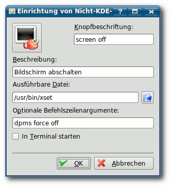
Verknüpfung anlegen in KDE.
Bildschirm abschalten auch für KDE
Ich lese freiesMagazin jetzt seit drei Ausgaben und möchte Euch herzlich beglückwünschen - meistens sind es doch die kleinen Tipps und Tricks, die einem immer wieder die Augen öffnen. So ist es mir auch wieder mit dem Artikel ,,Bildschirm mit einem Klick ausschalten'' (Link) gegangen, was sich natürlich auch mit KDE realisieren lässt. Dazu klickt man mit der rechten Maustaste in einen freien Bereich der Kontrollleiste und wählt ,,Programm hinzufügen » Nicht KDE-Programm hinzufügen''. In dem Menü fügt man dann die Knopfbeschriftung, die Beschreibung sowie unter ,,Ausführbare Datei'' /usr/bin/xset und unter ,,Optionale Befehlszeilenargumente'' dpms force off ein. Durch einen Klick auf das Icon oben links lässt sich ein passendes Symbol auswählen und mit ,,OK'' einrichten.
Heiko Andresen freiesMagazin: Vielen Dank für das Kompliment und für diese Ergänzung, die sicher für einige unserer Leser hilfreich sein wird. Abo-Funktion?
Ist es eigentlich möglich ein Abo von dem Magazin zu bekommen? Also eine monatliche E-Mail mit dem aktuellen Magazin als PDF im Anhang oder so etwas? Wäre, so finde ich, eine feine Sache.
Ralph Dörr freiesMagazin: Wir bieten keine Abo-Funktion per E-Mail an. Der Aufwand ist uns zu hoch, da wir durch das Speichern der E-Mail-Adressen ggf. Maßnahmen zum Datenschutz ergreifen müssten.
Alternativ können Sie aber unseren RSS-Feed (Link) nutzen, um über das Erscheinen neuer Ausgaben informiert zu werden. Auch E-Mail-Programme wie Thunderbird erlauben das Abrufen von RSS-Feeds. Interviews
Ich habe es sehr interessant gefunden, in den frühen Ausgaben von freiesMagazin Interviews mit wichtigen Leuten der Ubuntu-Szene zu lesen. Da sich bei der Führung inzwischen einiges getan hat (z. B. neuer Leiter für Xubuntu, usw.), würde ich vorschlagen, dieses Thema wieder aufzubereiten und frische Interviews zu bringen.
Bojan Bozic freiesMagazin: Die Interviews aus den Anfangstagen von freiesMagazin waren von Behind Ubuntu (Link), auf deren Seite es aber keine neuen Interviews mehr gibt. Wir versuchen aber ab und an weitere Interviews zu veröffentlichen, wie man bereits in der vorletzten Ausgabe am Interview mit Damian Pietras sah (Link) und auch in dieser Ausgabe am Interview mit Tobias König dort (Link) sieht. Links
http://www.presseportal.de/pm/70589/1163710/zattoo_europe_ltd
ftp://ftp.freiesmagazin.de/2008/freiesMagazin-2008-03.pdf
http://www.freiesmagazin.de/rss.xml
http://behindubuntu.org/
ftp://ftp.freiesmagazin.de/2008/freiesMagazin-2008-02.pdf
Die Redaktion behält sich vor, Leserbriefe gegebenenfalls zu kürzen.
Zum Index
Distributionen aktuell
Es gab letzten Monat viele neue Versionen der verschiedensten Linux-Distributionen. Der Artikel soll die Neuigkeiten kurz zusammenfassen. Archlinux
Am 1. April erschien mit ,,2008.03-archboot Core Dump'' eine neue offizielle Version der ISO-Images der Rolling-Release-Distribution Archlinux (Link). Unterstützt werden nach wie vor i686- und x86_64-Architekturen. Hauptsächliche Veränderungen betreffen das Installationssetup und die Installations-CD selbst. Ferner sind die neuen ISOs mit Kernel 2.6.24.4 und der aktuellen Version des distributionseigenen Paketmanagers Packman 3.13 ausgestattet. Damn Small Linux
Der erste Release Candidate von Damn Small Linux 4.3 ist mit vielen Änderungen erschienen. Die Live-Distribution ist gerade einmal 48 MB klein und liefert mit Fluxbox als Fenstermanager dennoch ein voll funktionsfähiges Linux-System, das vor allem für ältere Rechner sinnvoll ist (Link). Dreamlinux
Nachdem am 25. März der dritte Release Candidate von Dreamlinux 3.0 veröffentlicht wurde, der vor allem die Probleme mit den neuen aus Debian stammenden Paketen des Release Candidate 2 beheben sollte, wurde fünf Tage später die finale Version veröffentlicht. Neben Stabilität, Performance und Hardwareunterstützung wurde vor allem an der Bedienung gefeilt. So soll der Installer wesentlich intuitiver zu bedienen sein. Es ist nun auch möglich, Dreamlinux auf eine USB-Festplatte oder einen USB-Stick zu installieren (Link). Fedora
Die erste (und einzige) Beta-Version des kommenden Fedora 9 wurde freigegeben. Wichtigste Änderungen gegenüber Fedora 8 sind GNOME 2.22, KDE 4.0.2, Firefox 3 Beta 5, Kernel 2.6.25rc5, OpenOffice 2.4 und X.org 1.5, wobei X.org so verändert wurde, dass es schneller starten soll. Wie auch schon Ubuntu zuvor, setzt Fedora nun auf Upstart anstelle SysV-Init. Auch der Installer Anaconda wurde verbessert, sodass dieser die Größe von ext2-, ext3- und NTFS-Partitionen verändern kann und auch eine Installation auf verschlüsselte Dateisysteme zulässt. Ende April soll die Finalversion von Fedora 9 erscheinen (Link).
Zusätzlich will man in Fedora 9 keine proprietären Codecs mehr mitliefern. Codeina (,,Codec Buddy'') installierte in der Vergangenheit bei fehlenden Codecs automatisch die unfreien, aber lizenzierten Bibliotheken der Firma Fluendo. Dies will man nun abstellen und nur noch den freien MP3-Treiber unter Fedora direkt anbieten (Link). Damit bewegt man sich auf der Usability-Leiste wieder ein Stück zurück, auf der FOSS-Leiste dafür ein Stück nach vorn.
Ingesamt scheint Fedora die GPL sowieso sehr ernst zu nehmen. Der Projektvorstand hat nun alle Helfer gebeten, auf Veranstaltungen, auf denen Fedora-CDs/DVDs herausgegeben werden, auch ein Zettel beizulegen, der einen Hinweis und einen Link auf den Quellcode enthält. Zusätzlich sollen an jedem Fedora-Stand ein CD-Brenner bereitstehen, um auf Anfrage den Quellcode aller Pakete auf CD herauszugeben (Link). Foresight Linux
Das brandneue GNOME 2.22 (siehe dort (Link)) hat bereits Einzug in die erste veröffentliche Linux-Version gefunden. Foresight Linux 2.0 bringt aber vor allem den neuen Paketmanager ,,Conary'' mit, der bei einem Paketupdate nur die benötigten Dateien herunterlädt und nicht mehr das ganze Paket. Dies ist auch der Grund, wieso Shuttle die Distribution auf seinem kPC einsetzt (siehe dort (Link)). Daneben wurde die Grafiktreiberinstallation vereinfacht und der Bootloader Grub durch Syslinux ersetzt (Link). Gentoo
Die Gentoo Foundation wurde neu zusammengesetzt und von den Gentoo-Entwicklern gewählt. Auf dem nächsten Treffen soll der weitere Weg von Gentoo geplant werden (Link). Und obwohl es am 31. März noch hieß, dass die Beta-Version von Gentoo 2008.0 aus persönlichen Gründen verschoben werden müsste (Link), gab es einen Tag später die Veröffentlichung, wobei noch viele Fehler darin zu finden sind (Link). Knoppix
Kaum zwei Wochen nach der Bekanntgabe von Knoppix 5.3 auf der CeBIT hat Klaus Knopper Version 5.3.1 mit Kernel 2.6.24.4 offiziell herausgebracht. Zum Einsatz kommt noch das alte KDE 3.5.8, KDE 4 wird aber als Boot-Option auf der DVD zu finden sein. Knoppix unterstreicht vor allem die Barrierfreiheit mit dem sprachausgabeunterstützten Desktop-System ADRIANE und dem Screenreader Orca (Link). Mandriva
Mandriva bereitet sich langsam auf die Veröffentlichung von Mandriva Linux 2008.1 Spring vor. So wurde im Release Candidate 2 unter anderem Codeina für die leichtere Codec-Installation eingesetzt, welches bei Fedora 9 im Gegensatz dazu verschwunden ist (siehe oben), Handys können nun einfacher synchronisiert werden, ATI Radeon HD 3xxx-Grafikkarten werden unterstützt, KDE 4.0.2 hat Einzug gefunden und vieles mehr (Link). Im Release Candidate 1 gab es einige neue Programme wie das Medien-Center Elisa, die Prozessverwaltung Avant Window Navigator (AWN) oder das GNOME-Synchronisationsprogramm Conduit (Link). Mandriva Linux 2008.1 RC2 kann als ,,Free Edition'' für 32-bit- und 64-bit-Rechner als DVD- oder CD-Version heruntergeladen werden. Daneben gibt es noch die ,,One Edition'' mit KDE oder GNOME als Live- und Installations-CD für 32-bit-Rechner. openSUSE
Änderungen in der dritten Beta-Version von openSUSE 11.0 sind natürlich vorrangig Updates am Linux-Kernel 2.6.25-rc5, GNOME 2.22, KDE 4.0.2 und KDE 3.5.9 und anderen Programmen. Besonderes Augenmerk gilt aber Zypper 0.10.2, welches die Paketverwaltung vor allem bei sehr großen Paketlisten beschleunigen soll. Alle Fehler wurden aber noch nicht ausgebessert, wie man den Release Notes (Link) entnehmen kann. Die Alpha-Version steht für 32-bit- und 64-bit-Rechner als Live-CD und Installations-CD und zusätzlich mit PowerPC-Unterstützung als DVD zum Download bereit (Link).
Nachdem Ubuntu bereits im Oktober 2007 ihr Ubuntu JeOS (,,Just enough Operating System'') vorgestellt hat, welches für die Anwendungen in virtuellen Maschinen vorgesehen ist, legt openSUSE nach und stellte LimeJeOS (Link) vor. Zusammen mit LimeJeOS sollen demnächst noch die Anwendungen Eis, welches unternehmensrelevante freie Software als vorinstalliertes VM-Image auf Basis von LimeJeOS anbietet, und KIWI, mit dem man Images von Betriebssystemen erstellen kann, veröffentlicht werden (Link). Red Hat
Red Hat hat die erste Beta-Version für Red Hat Enterprise Linux (RHEL) 5.2 veröffentlicht. Unter anderem wurde an der Virtualisierung mit Xen gearbeitet und es werden nun bis zu 64 Prozessoren und 512 GB Speicher unterstützt. Natürlich wurden auch der Kernel erneuert und die Treiber verbessert, vor allem der Suspend- und Hibernate-Modus auf Laptops soll besser arbeiten (Link). Sabayon Linux
Die zweite Beta-Version Loop 2 des auf Gentoo basierenden Systems Sabayon Linux 3.5 wurde veröffentlicht. Neben den neuesten Versionen für den Linux-Kernel 2.6.24.2, X.Org 7.3 und Compiz Fusion 0.7.2 wurde auch am Installer und am Entropy-Paketmanager gearbeitet. Sabayon enthält einige proprietäre (Grafiktreiber) und halb-legale Programme (libdvdcss) (Link). sidux
Die auf Debian basierende Distribution sidux 2008-01 ist als zweite Vorschauversion erschienen, bevor Ende März die finale Version veröffentlicht werden sollte, die aber noch nicht erschienen ist. Die Distribution kommt mit KDE 3.5.9 in Englisch und Deutsch und Kernel 2.6.24.3. Zusätzlich wurde das Design überarbeitet und die Menüeinträge sind nun XDG-konform. Alle Änderungen findet man in den Release Notes (Link). Ubuntu
Die erste und einzige Beta-Version von Ubuntu 8.04 LTS ,,Hardy Heron'' ist erschienen. Seit Ubuntu 7.10 hat sich einiges geändert: das neueste X.Org 7.3, PulseAudio als neuer Sound-Server, Kernel 2.6.24, PolicyKit für die Rechteverwaltung bei der Administration, Firefox 3 Beta 4, der neue VNC-Client Vinagre, Brasero anstelle von Serpentine und vieles mehr. Die finale Version von Ubuntu 8.04 soll am 24. April 2008 erscheinen (Link).
Zeitgleich ist auch die Beta-Version von Mythbuntu 8.04 erschienen. Mythbuntu ist für die Installation auf sogenannten Wohnzimmer-PCs gedacht, die ein Multimedia-Center inkl. Fernsehen und Videorekorder bereitstellen. Neu gegenüber der letzten Alpha-Version ist vor allem die Alternate-CD, mit der man ohne Live-CD Mythbuntu direkt installieren kann, und natürlich wurden wieder viele Fehler am Installer Ubiquity, am Mythbuntu Control Center und an MythTV selbst behoben (Link).
Am 25. April 2008 endet auch die Unterstützung für Ubuntu 6.10 ,,Edgy Eft''. Edgy ist im Oktober 2006 erschienen und wurde 18 Monate mit Sicherheitsaktualisierungen versorgt. Mit dem Erscheinen von Ubuntu 8.04 werden diese Updates eingestellt und es wird jedem Edgy-Nutzer empfohlen, auf eine neuere Ubuntu-Version zu wechseln (Link).
Zusätzlich verabschiedet sich Ubuntu mit Hardy offiziell von der UltraSPARC-Architektur, deren Unterstützung mit Ubuntu 6.06 LTS ,,Dapper Drake'' eingeführt wurde. Die Sparc-Version soll zwar weiter existieren, aber nicht mehr offiziell unterstützt werden (Link). Ulteo
Auf Basis des Ulteo-Online-Desktops, welcher u. a. Zugriff auf OpenOffice.org über ein Browserfenster gewährt, ist nun die erste Betaversion der neuen Linux-Distribution Ulteo Application System (Ulteo AS) erschienen. Die Distribution basiert auf Kubuntu, erweitert das System aber um nützliche Online-Komponenten, z. B. den globalen Authentifizierungsdienst ,,Ulteo-AA''. Zusätzlich wurde ein Synchronisationsdienst implementiert, der die lokalen Daten mit den Online-Daten abgleicht (Link). Zenwalk
Die auf Slackware basierende Distribution Zenwalk Live ist in der finalen Version 5.0 erschienen. Neu im Zenwalk-Installer ist die Möglichkeit, dass Live-System auf die Festplatte zu installieren. Mit ,,Live Clone'' kann man darüber hinaus die Live-Sitzung nach den eigenen Wünschen anpassen und als Live-CD sichern (Link). Wichtiger Hinweis: Alpha- und Beta-Versionen sind nicht für den täglichen Einsatz, sondern nur für Entwickler und Tester gedacht! (dwa, ths) Links
http://www.archlinux.de/
http://damnsmalllinux.org/cgi-bin/forums/ikonboard.cgi?;act=ST;f=36;t=19936
http://dreamlinuxforums.org/index.php/topic,1142.0.html
http://www.pro-linux.de/news/2008/12488.html
http://www.pro-linux.de/news/2008/12471.html
http://lwn.net/Articles/274000/
http://www.linux-magazin.de/news/foresight_linux_mit_gnome_2_22
http://www.gentoo.org/news/20080302-foundation-election.xml
http://www.pro-linux.de/news/2008/12510.html
https://forums.gentoo.org/viewtopic-t-682931.html
http://www.linux-magazin.de/news/knoppix_5_3_1_lenny_basis_kde_4_0_und_accessibility_software
http://www.pro-linux.de/news/2008/12478.html
http://www.pro-linux.de/news/2008/12403.html
http://news.opensuse.org/2008/03/19/announcing-opensuse-110-alpha-3/
http://www.pro-linux.de/news/2008/12479.html
http://en.opensuse.org/LimeJeos
http://www.pro-linux.de/news/2008/12474.html
http://www.golem.de/0803/58336.html
http://www.sabayonlinux.org/forum/viewtopic.php?f=60
http://sidux.com/Article410.html
http://ubuntuusers.de/ikhaya/956/
http://www.mythbuntu.org/hardybeta
http://www.ubuntu.com/news/ubuntu610end-of-life
http://www.pro-linux.de/news/2008/12492.html
http://www.linux-magazin.de/news/erste_beta_version_des_online_betriebsystems_ulteo
http://www.pro-linux.de/news/2008/12502.html
Zum Index
OpenOffice.org 2.4 erschienen
Die neue Version der freien Office-Sammlung ist seit dieser Woche als Download verfügbar und hat eine ganze Reihe neuer Funktionen mit im Gepäck. Wie man in der ausführlichen Liste (Link) nachlesen kann, ist es fortan möglich, eine Verbindung zu WebDAV-Servern über HTTPS einzurichten und gepeicherte Passwörter mit einem Hauptpasswort abzusichern. Mit der Ausgabe 2.4 unterstützen PDF-Dokumente zukünftig relative Verknüpfungen, Dokumentreferenzen und PDF/A-1, einen Standard für die Langzeit-Archivierung. Auf den ersten Blick fällt auch die neue Standard-Schriftart DejaVu ins Auge, die sich gegen den BitStream Vera Font durchgesetzt hat. Nicht zuletzt wurde auch der Druckdialog erweitert sowie der Import von eigenen Icons in die Werkzeugleisten integriert. Im Bereich der einzelnen Komponenten gibt es vor allem im Diagramm-Modul Chart einige vielversprechende Neuerungen: Achsenrichtungen sind von nun an umkehrbar, Datenpunkte können mit einer genaueren Beschriftung versehen und Tabellensäulen einfacher angeordnet werden. Die Linux-Variante der Präsentationssoftware Impress wurde von den Entwicklern mit mehreren 3D-Überblendeffekten versehen und beinhaltet dazu eine komfortablere PDF-Exportfunktion. In der Datenbankanwendung Base wurde insbesondere der Abfrage-Designer neugestaltet und die Unterstützung von Datenbanken aus Access 2007 (Microsoft Office) eingefügt. Auch der Textverarbeiter Writer kommt nicht zu kurz: Textabschnitte lassen sich in Zukunft per Blockmarkierung selektieren und weiterverarbeiten, versteckter Text kann gedruckt werden und die Sprache für die Rechtschreibprüfung lässt sich nun bequem über ein Symbol in der Statusleiste umschalten. OpenOffice.org 2.4 kann im Downloadbereich (Link) der Projektseite heruntergeladen werden, sowohl Binärpakete als auch der Quellcode stehen zum Download bereit. Die Version 2.4 wird voraussichtlich die letzte Hauptversion sein, die vor der für Herbst 2008 geplanten Fassung 3.0 erscheint. Das OpenOffice.org-Projekt wird auch auf dem LinuxTag 2008 (Link) in Berlin vertreten sein, wo Referenten unter anderem über OpenOffice.org 3.0 und das OpenDocument-Format berichten werden. (awe) Links
http://wiki.services.openoffice.org/wiki/New_Features_2.4
http://download.openoffice.org/
http://de.openoffice.org/linuxtag2008/
http://www.pro-linux.de/news/2008/12497.html
http://www.golem.de/0803/58574.html
Zum Index
GNOME 2.22.0 erschienen
Am 13. März wurde nach zwei Beta-Versionen und einem Release-Candidate die erste stabile Version der GNOME-Reihe 2.22 veröffentlicht. Schon die Vorabversionen lieferten einige interessante Eindrücke von dem, was die Nutzer in der kommenden Generation der Desktopumgebung erwartet. Denn GNOME 2.22.0 hat nicht nur zahlreiche Fehlerkorrekturen mit im Gepäck, sondern auch die eine oder andere neue Anwendung. Eine dieser neuen Applikationen ist Cheese (Link): Mit der Webcam-Software lassen sich einfach Bilder und Videos mit der Webcam aufnehmen und per GStreamer mit Effekten versehen. Auch neu an Bord ist Vinagre, ein Ersatz für den xvncviewer als Standard-VNC-Client, dem man schon in der Ubuntu Hardy Alpha 4 (Link) begegnet ist. Weiter wurde das World-Clock-Applet integriert: Über einen Klick auf die Uhrzeit im Panel lässt sich fortan bequem anzeigen, wie spät es auf der anderen Seite des Globus ist. Nicht neu geschaffen, aber grundlegend verändert, wurde der Webbrowser Epiphany (Link): Die Entwickler haben sich dazu entschieden, die HTML-Rendering-Engine auszutauschen, sodass Epiphany beim Surfen von nun an statt auf Gecko, der Engine des Mozilla-Projektes, auf das WebKit-Backend setzt. WebKit ist eine immer populärer werdende Browser-Engine, die aus KHTML (KDE) hervorging und besonders von Apple-Anwendungen wie Safari verwendet wird. Nennenswert im Bereich der unterflächlichen Neuheiten ist ebenfalls der Austausch des Virtual File Systems (VFS), das durch den Nachfolger GVFS ersetzt worden ist. Damit nicht genug, beschreibt GNOME 2.22 auch ein neues Kapitel der Geschichte ,,Linux und Flash'': Mit swfdec-gnome ist es nun möglich, Flash-Animationen nicht nur im Internet-Browser, sondern auch auf dem Desktop abzuspielen und durch den swfdec-thumbnailer in Nautilus als Vorschau zu betrachten. Außerdem überrascht der Mediaplayer Totem mit zwei vielversprechenden Erweiterungen: Durch das YouTube-Plugin (Link) kann man in Zukunft das beliebte Video-Portal mit Totem durchstöbern (mehr dazu dort (Link)) und mit dem MythTV-Addon (Link) lassen sich künftig Aufnahmen von einem MythTV-Server sowie Live-TV-Sendungen anschauen. Ob die Ausbesserungen und neuen Features (Link) auch in der Praxis einen guten Eindruck machen, wird sich zeigen. Die Version 2.22.1 soll bereits Anfang April erscheinen, während das nächste große Release, GNOME 2.24, für September geplant ist. (awe) Links
http://wiki.ubuntuusers.de/Cheese
http://ubuntuusers.de/ikhaya/896/
http://wiki.ubuntuusers.de/Epiphany
http://svn.gnome.org/viewvc/totem/trunk/src/plugins/youtube/
http://svn.gnome.org/viewvc/totem/trunk/src/plugins/mythtv/
http://library.gnome.org/misc/release-notes/2.22/
Zum Index
Automatix wurde eingestellt
Automatix (Link) ist eine Software, die von einigen Ubuntu-Nutzern zu den Anfangstagen von Ubuntu ins Leben gerufen wurde. Das Programm half dabei, einige häufig gebrauchte Anwendungen wie Treiber oder Codecs zu installieren oder Einstellungen zu aktivieren, die mit herkömmlichen Bordmitteln nur schwer erreichbar waren. Mit der Weiterentwicklung von Ubuntu waren aber viele Funktionen der Software hinfällig (siehe ,,Alternativen zu Automatix'' in freiesMagazin 09/2007 (Link)). Zusätzlich war die Software nicht sehr sicher, was vor allem bei den Supportern in diversen Ubuntu-Foren für Unmut sorgte. Da Automatix bei Einsteigern sehr beliebt war, führte dies manchmal zu Fehlern, die erst nach einer intensiven Fehlersuche auf das Programm zurückgeführt werden konnten. Eine Analyse von Ubuntu-Entwickler Matthew Garret zeigte im September 2007 einige Probleme auf (siehe ,,Genauer hingeschaut: Kritik an Automatix'' in freiesMagazin 09/2007 (Link)). Der Projektleiter Jared B. hat nun offiziell die Einstellung von Automatix bekannt gegeben (Link). Es werden aber nicht obige Gründe, sondern persönliche Verpflichtungen genannt, die zu diesem Schritt führten. In der Ubuntu-Gemeinde wurde die Entscheidung teilweise mit Begeisterung aufgenommen, sodass sogar ein Aprilscherz (siehe auch dort (Link)) damit umgesetzt wurde (Link) (Link). (dwa) Links
http://www.getautomatix.com/
ftp://ftp.freiesmagazin.de/2007/freiesMagazin-2007-09.pdf
http://www.getautomatix.com/forum/index.php?showtopic=2424
http://www.sourcecode.de/content/damn%C2%B7now-john-fixed-bug-1-there-nothing-do-anymore
http://ubuntulinuxtipstricks.blogspot.com/2008/04/yet-automatix-has-been-uploaded-to.html
Zum Index
Video mit Skype jetzt auch für Linuxnutzer
Am 13.\.März hat das zu eBay gehörende luxemburgische Unternehmen Skype die finale Version 2.0 der gleichnamigen VoIP-Software zur Verfügung gestellt. Nach der fünfmonatigen Betaphase wurden nicht nur einige Bugs beseitigt und die Klangqualität verbessert, sondern auch neue Funktionen hinzugefügt. Wohl am meisten erwartet war die Videotelefonie, die nun, nach dem Vorbild der Versionen der anderen Betriebssysteme, auch in das Linuxpendant integriert wurde. Ferner wurde auch die Option, eingehende Anrufe automatisch anzunehmen, eine Pipe-Login-Funktion zum Anmelden über die Konsole und ein Gebührenzähler (für Anrufe ins internationale Telefonnetz) eingebaut. Skype 2.0 wird auf der Skype-Website (Link) als Binärpaket für alle gängigen Distributionen zur Verfügung gestellt (Link). Benötigt wird ein Computer mit 1 GHz CPU, 256 MB Arbeitspeicher, 20 MB Speicherplatz, eine Xv-unterstützende Grafikkarte, Qt 4.2.1+, D-Bus 1.0.0 und libasound2 1.0.12. (jse) Links
http://skype.com/intl/de/
http://skype.com/intl/de/download/skype/linux/choose/
Zum Index
Bessere Spieleunterstützung in Linux
CrossOver (Link) ist eine kommerzielle, auf Wine basierende, Windows-kompatible Laufzeitumgebung, die Windows-Programme unter Linux und Mac lauffähig macht. Hersteller CodeWeavers hat nun eine spezielle ,,CrossOver Games''-Edition (Link) veröffentlicht, die im Gegensatz zur herkömmlichen Version die Stabilität zu Gunsten der allerneuesten Funktionen hinten anstellt. Auf der Liste der unterstützten Spiele (Link) stehen unter anderem bekannte MMORPGs wie World of Warcraft, Eve Online und Guild Wars, aber auch Spiele wie Team Fortress 2, Counterstrike Source und Civilization 4. Für Linux und Mac OS X steht eine siebentägige Testversion bereit (Link), die Vollversion kostet 37 US-Dollar (Link). Schöner ist es natürlich, wenn ein Spielehersteller Linux eigenständig unterstützt, so wie S2 Games dies aktuell tun. Diese haben den Nachfolger ,,Savage 2: A Tortured Soul'' des sehr erfolgreichen Spiels ,,Savage: The Battle for Newerth'' nun auch für Linux als 32-bit- und 64-bit-Version zum Download freigegeben (Link). Jeder kann sich ein Konto einrichten und das Online-Spiel für fünf Stunden kostenlos testen. Danach muss man einmalig 30 US-Dollar zahlen, um weiterspielen zu können (Link). (dwa) Links
http://www.codeweavers.com/products/
http://www.codeweavers.com/products/cxgames/
http://www.codeweavers.com/compatibility/browse/group/?app_parent=4100
http://www.codeweavers.com/products/cxgames/download_trial/
http://wine-review.blogspot.com/2007/07/introduction-to-crossover-games.html
http://savage2.s2games.com/download.php
http://www.pro-linux.de/news/2008/12495.html
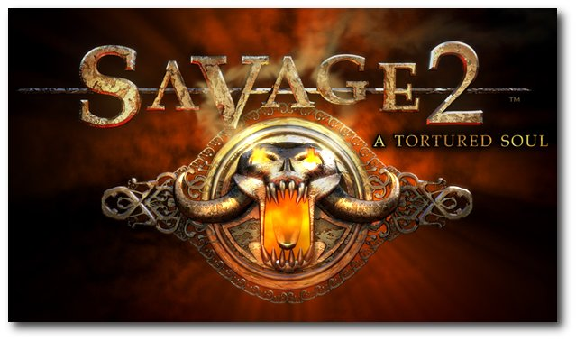
,,Savage 2: A Tortured Soul''.
© S2 Games
Zum Index
AOL startet Open AIM 2.0
Mit Open AIM 2.0 will AOL sein Instant-Messaging-Protokoll OSCAR (Open System for Communication in Realtime) weiter öffnen. Es wurden ausführliche Dokumentationen zur Verfügung gestellt und es ist mit Version 2.0 nun erlaubt, das Protokoll auch in Multi-Messengern einzusetzen, die neben AIM auch z. B. Jabber, ICQ oder MSN unterstützen (Link). Damit hat man sich gegenüber der 2006 gestarteten Open-AIM-Initiative (Link) zwar verbessert, dennoch hat die Lizenz, unter der die Dokumentation benutzt werden darf, einige Haken. So fordert AOL von den Entwicklern, bestimmte Elemente (mindestens zwei) wie AOL-Werbung, AIM-Toolbar, AIM-Buddy-Icons, AIM-Buddy-Informationen oder AIM-Startseite einzubauen. Die meisten Open-Source-Clients haben bereits Buddy-Icons und Buddy-Informationen integriert, so dass dies nur eine kleine Einschränkung ist. Viel weitreichender ist die Bedingung, dass wenn ein Messenger mehr als 100.000 gleichzeitige Nutzer hat, dieser zwingend AOL-Werbung in die Benutzeroberfläche einbauen muss. Zusätzlich darf die von AOL bereitgestellte Closed-Source-Bibliothek benutzt und weiterverbreitet werden, eine Benutzung in Open-Source-Software ist damit aber ausgeschlossen. Aktuell ist es für Open-Source-Entwickler sinnvoller, die durch Reverse-Engineering gewonnene OSCAR-Implementation libpurple von Pidgin (Link) zu nutzen. (dwa) Links
http://arstechnica.com/news.ars/post/20080305-aols-open-aim-2-0-sdk-license-requires-apps-to-include-ads.html
http://arstechnica.com/news.ars/post/20060307-6329.html
http://developer.pidgin.im/
Zum Index
Amazon-MP3-Downloader auch für Linux
Amazon.com (Link) hat seinen MP3-Shop auch für Linux geöffnet. Auf der Amazon-Webseite (Link) gibt es für die Linux-Distributionen Ubuntu 7.10, Debian 4, Fedora 8 und openSUSE 10.3 den von Windows bekannten Download-Client. Mit diesem können über den MP3-Shop verschiedene Lieder und Alben gekauft werden, die alle DRM-frei sind und somit ohne Einschränkungen benutzt werden können. In Deutschland vertreibt Amazon leider noch keine MP3-Download-Angebote, der Dienst ist aktuell nur mit US-amerikanischen Kreditkarten nutzbar (Link). Wer dennoch die Möglichkeit hat, auf den MP3-Dienst zuzugreifen, kann der Band ,,Nine Inch Nails'' etwas Gutes tun und deren neues Album ,,Ghosts'' für 5 US-Dollar kaufen. Die Band hat dieses nämlich unter der Creative Commons BY-NC-SA 3.0-Lizenz (Link) veröffentlicht und erlaubt jedem Benutzer die nicht-kommerzielle Weitergabe und Veränderung (Bit-Torrent-Links gibt es bereits). Die ersten 9 Tracks gibt es auch als kostenlosen Download auf der NIN-Webseite (Link) im MP3-Format und man kann das komplette Album mit allen 36 Titeln für 10 Dollar im verlustfreien FLAC-Format kaufen (Link). Es ist wünschenswert, dass Nine Inch Nails mit dieser Verkaufsstrategie genug Geld einnimmt und gegebenenfalls andere Künstler nachziehen. (dwa) Links
http://www.amazon.com/
http://www.amazon.com/gp/dmusic/help/amd.html/002-5922609-9364832?ie=UTF8
http://www.pro-linux.de/news/2008/12409.html
http://creativecommons.org/licenses/by-nc-sa/3.0/us/
http://ghosts.nin.com/
http://www.golem.de/0803/58102.html
Zum Index
Kernel-Rückblick
NDISwrapper kann auf eine bewegte Geschichte im Kernel 2.6.25 zurückblicken. Zwischenzeitlich funktioniert er wieder, nachdem in 2.6.25-rc4 ein Patch (Link) eingeführt wurde, der ihm den Zugriff auf bestimmte Kernel-Schnittstellen wieder gestattete. Dies wurde durch einen anderen Patch (Link) verhindert, welcher den NDISwrapper als beschmutzt (tainted) deklariert hatte. Schon lange wird darüber diskutiert, ob der von den Kernel-Entwicklern ungeliebte NDISwrapper, der die Nutzung von Windows-Treibern für WLAN-Hardware mit dem Linux-Kernel ermöglicht, nun als GPL-kompatibel anzusehen ist oder nicht. Hauptkritikpunkt ist dabei die Tatsache, dass Nicht-GPL-Komponenten damit genutzt werden und daher auch der NDISwrapper keinen Zugriff auf die Kernel-Schnittstellen haben solle, die GPL-konformen Modulen vorbehalten sind. Torvalds selbst befürwortet mittlerweile die Freigabe der benötigten Schnittstellen für den NDISwrapper, da die GPL nur abgeleitete Komponenten des Kernels betreffe, Windows-Treiber jedoch eher nicht in diese Kategorie fallen (Link). Da keine Module des Kernel-Tree mehr davon Gebrauch machen, wurde der Export von init_mm abgestellt. Als Ergebnis verweigerten Treiber von Dritten, die auf init_mm angewiesen sind, den Dienst. Hierunter fallen zum Beispiel auch die proprietären Treiber von Nvidia. Die Hersteller sollten ihre Treiber anpassen oder den Code unter eine GPLv2-kompatible Lizenz stellen, so dass die Kernel-Entwickler ihnen dabei helfen könnten, lautete der darauf folgende Kommentar (Link). Jedoch wurde die entsprechende Änderung vorläufig wieder rückgängig gemacht, um den Herstellern, so auch VirtualBox, Zeit zum Anpassen ihrer Treiber zu geben. Aber aufgeschoben ist nicht aufgehoben, init_mm soll in Kernel-Version 2.6.26 dann endgültig verschwinden. Der Kernel 2.6.25 nähert sich derweil der Fertigstellung. Die letzte Veröffentlichung von 2.6.25-rc8 erfolgte zwar am 1. April, war aber durchaus ernst gemeint (Link). Auch wenn Torvalds bei dieser Vorabversion nicht ganz so enthusiastisch klang wie bei der vorhergegangenen, konnte er doch die beiläufige Bereinigung einiger Probleme durch Einzeiler verkünden. Einen definitiven Termin, wann denn nun der nächste Kernel fertig sein soll, blieb Torvalds bislang schuldig. (mme) Links
http://git.kernel.org/?p=linux/kernel/git/torvalds/linux-2.6.git;a=commit;h=9b37ccfc637be27d9a652fcedc35e6e782c3aa78
http://git.kernel.org/?p=linux/kernel/git/torvalds/linux-2.6.git;a=commit;h=0aa5bd52d0c49ca56d24584c646e6544ccbb3dc9
http://thread.gmane.org/gmane.linux.kernel/647537/focus=649632
http://lkml.org/lkml/2008/2/28/41
http://lkml.org/lkml/2008/4/1/308
Zum Index
Neues aus der Welt der Mobilgeräte
Letzten Monat waren die Kleinen - die Rede ist von Ultra Mobile PCs (UMPCs) und Mobile Internet Devices (MIDs) - wieder ganz groß. Laut einer Studie der Firma Strategy Analytics soll der aktuelle fünfzehnprozentige Markanteil an Linux-Mobilgeräten in Zukunft drastisch steigen. Vor allem Google mit seiner Android-Plattform und Motorola als Hardware-Hersteller mischen dabei ganz vorne mit (Link). In Android wurden letzten Monat auch einige wichtige Sicherheitslücken geschlossen, die vor allem bei der Behandlung von Bilddateien auftauchen könnten. Schuld daran sind laut Aussage alte Bibliotheken, aber auch eigene Fehler im Android-Code. Es konnte leider nicht festgestellt werden, ob Mobilgeräte-Hersteller diesen fehlerhaften Code bereits auf ihren Geräten im Einsatz haben (Link).
Wer sicher gehen will, kann dafür ja die Plattform der LiMo-Foundation benutzen, die am 31. März als erste fertige Version erschienen ist. Die Software umfasst dabei aber nur den Betriebssystemkern, die grafische Oberfläche und die Anwendungen muss der jeweilige Gerätehersteller selbst umsetzen. Aktuell muss die Software auch noch für jedes Handy spezifisch angepasst werden, was sich mit der zweiten Version Anfang 2009 erübrigen soll (Link).
Und auch Asus hat für seinen EeePC ein Software Development Kit (SDK) veröffentlicht, mit dem Entwickler Anwendungen speziell für das kleine UMPC-Display entwickeln können. Zum Einsatz auf der 1,2 GB-großen ISO-Datei mit Xandros Desktop Open Circulation Version 4.5 kommt Eclipse als Entwicklungsumgebung und Qt als Gui-Framework. Daneben gibt es Anleitungen zur Integration eigener Anwendungen in die EeePC-Oberfläche. Das Xandros-System muss zur Benutzung auf dem Rechner installiert werden (Link). Aber nicht nur an der Software, auch an der Hardware arbeitet Asus. Auf der CeBIT wurde der Nachfolger des EeePC vorgestellt. Der Asus EeePC 900 hat ein etwas größeres 8,9-Zoll-Display als der Vorgänger. Der Flash-Speicher wurde bei manchen Modellen auf 12 GB, der Hauptspeicher auf 1 GB erweitert. Der Preis soll auch um 100 Euro auf 399 Euro ansteigen. Wann das Gerät verfügbar sein wird, ist noch nicht klar, Asus spricht vom Sommer 2008 (Link).
Es drängen aber immer mehr Hersteller auf den Markt, die Asus Marktanteile abgraben wollen. So hat Norhtec für Entwicklungsländer einen UMPC mit Linpus Linux Lite veröffentlicht. Der sogenannte Gecko Laptop wird von Quanta hergestellt und soll am Ende unter 300 Dollar kosten. Im Inneren läuft eine 1 GHz-VIA-CPU, das Display misst 7 Zoll. Linpus Linux Lite wurde speziell für UMPCs und MIDs entwickelt und bietet mit seinen beiden Eingabeoberflächen sowohl für Einsteiger als auch erfahrene Anwender eine gute Lösung (Link).
Daneben hat auch Fujitsu Computer Systems den Linux-Markt für sich entdeckt. Die bisher mit Windows ausgestatteten UMPCs LifeBook U810, LifeBook T2010 und LifeBook P1620 und das Notebook LifeBook S6510 konnten für SUSE Linux Enterprise Desktop (SLED) von Novell zertifziert werden. Es ist aber noch unklar, wann die Geräte genau erhältlich sind und was die Preisspanne sein wird (Link).
Auf der CeBIT hat auch Gigabyte erste Geräte auf Basis von Intels Menlow-Prozessor vorgestellt. Die MIDs laufen mit 800 MHz bis 1,33 GHz, die Eingabe geschieht über den 4,8-Zoll-Touchscreen, es gibt aber auch eine kleine Tastatur zum Ausziehen. Per WLAN und HSDPA kann man mit der Außenwelt kommunizieren, Daten werden auf der 4 GB bis 8 GB großen Solid State Disk (SSD) gespeichert. Das Gerät lief auf der CeBIT mit einem angepassten Ubuntu Linux 7.10 (wahrscheinlich die Mobile-Variante ,,Ubuntu Mobile'') (Link).
Intel zeigte dagegen auf der Intel Developer Conference (IDF) in Shanghai die zweite Generation seines ClassmatePC. Der Mini-Laptop wurde leicht im Design verändert und erhält ein größeres 9-Zoll-Display. Zusätzlich ist Intel einer der ersten Hersteller, die sich wieder weg vom Flash-Speicher hin zu einer Subnotebook-Festplatte bewegen. Im Inneren arbeiten ein Intel Celeron ULV mit 900MHz, ein Intel 915M-Grafikchip und 512 MB DDR2-RAM. Daneben gibt es noch eine Webcam, WLAN, Ethernet und andere Anschlüsse. Der Preis des ClassmatePC liegt zwischen 300 und 500 US-Dollar, auch abhängig vom Betriebssystem Linux oder Windows (Link).
Nicht so gut schaut es beim ,,One Laptop Per Child''-Projekt aus. OLPC-Gründer Negroponte hatte angekündigt, dass demnächst ein angepasstes Windows XP erscheinen soll. Bis Ende Mai soll das System auf dem XO-Laptop veröffentlicht werden. Viele OLPC-Unterstützer sehen das ungern, da die Philosophie hinter dem Projekt damit untergraben wird. Der XP-Laptop wäre dann nur ein weiteres x-beliebiges Mini-Notebook. Zusätzlich werden auch die Kosten der Hardware steigen, da Windows XP wesentlich hardwarehungriger ist als das eingesetzte Linux-System Sugar (Link). Die erste Konsequenz hat der Chefentwickler für Sicherheit, Ivan Krstić, gezogen und seinen Posten geräumt (Link). Eine ganze andere Idee hat Motorola. Die Firma hat auf der CTIA Wireless 2008 sein neues Mobile TV DH02 vorgestellt. Das mit Linux betriebene Gerät hat ein HDSPA/GPRS-Modem integriert, über das man Fernsehen kann. Der 4,8-Zoll-große Touchscreen mit 480x272 Pixeln ist gestenbasiert und zeigt Filme mit 25 Bildern pro Sekunde an. Daneben enthält das Gerät auch einen GPS-Empfänger und eine sprachgesteuerte Navigationskarte. An gewöhnlichen Mobilfunkoptionen unterstützt das DH02 nur den SMS-Versand (Link). Und auch andere Hersteller benutzen Linux immer lieber auf ihrer Hardware. So hat Everex einen Mini-PC namens ,,gPC Mini'' herausgebracht. Der Zwerg läuft mit einem Pentium Mobile Dual-Core 1.86 GHz und besitzt 512 MB RAM, 120 GB Festplatte und ein DVD-Laufwerk. Als System kommt wieder das mit vielen Google-Anwendungen vorinstallierte gOS zum Einsatz, welches man schon vom herkömmlichen gPC kennt. Vorerst ist der Mini-PC nur in den USA für ca. 500 US-Dollar erhältlich (Link).
Shuttle dagegen, die u. a. für ihre Barebones bekannt sind, bietet mit dem neuen kPC (Link) ein eben solches an. Das Gerät besitzt einen Intel Celeron oder Core 2 Duo, 512 MB RAM und Intel 950-Grafik. Als Betriebssytem kommt Foresight Linux zum Einsatz, das wahrscheinlich wegen des Conary Package Manager gewählt wurde. Dieser unterstützt inkrementelle Updates und muss so weniger Dateien bei einer Aktualisierung herunterladen (siehe auch dort (Link)) (Link).
Zu guter Letzt will Intel mit seiner Diamondville-Plattform in den Billig-Desktop-Markt einsteigen. Mit ,,NetTops'' und ,,NetBooks'', die speziell auf Online-Anwendungen ausgerichtet sind, will Intel den Desktop-Markt etwas durcheinanderbringen. Die Kosten sollen sich zwischen 100 und 300 Dollar bewegen. Als System kann Linux und Windows eingesetzt werden, laut Intel will man aber auf der Open-Source-Welle mitreiten (Link). Man kann also gespannt sein, wie sich die Zukunft des Mobilmarktes - vor allem in Hinblick auf Linux - weiter entwickeln wird. (dwa) Links
http://www.pro-linux.de/news/2008/12518.html
http://www.heise.de/open/news/meldung/104684
http://www.linuxdevices.com/news/NS7175295902.html
http://www.golem.de/0803/58638.html
http://www.linux-magazin.de/news/cebit_2008_asus_eee_pc_900
http://www.desktoplinux.com/news/NS8029320493.html
http://www.desktoplinux.com/news/NS4307570673.html
http://www.linux-magazin.de/news/aussichtsreiche_mobile_internet_devices
http://www.linuxdevices.com/news/NS5036131897.html
http://www.olpcnews.com/software/windows/xp_on_the_xo_in_60_days.html
http://www.gulli.com/news/one-laptop-per-child-2008-03-22/
http://www.linuxdevices.com/news/NS2734059074.html
http://www.pro-linux.de/news/2008/12408.html
http://us.shuttle.com/kpc/
http://www.pro-linux.de/news/2008/12416.html
http://www.winfuture.de/news,38070.html
Zum Index
Initiativen zur Verbesserung Freier Software
Zurzeit laufen mehrere Initiativen, die alle dem Ziel dienen, Freie-Software-Projekte durch die Arbeit von Freiwilligen voranzutreiben. Dabei winken den erfolgreichen Projektteilnehmern zum Teil Geld-, zum Teil Sachpreise. Google Summer of Code
Googles Summer of Code 2008 startet langsam durch: 175 Open-Source-Projekte (Link) (darunter Apache, Debian, SFLC, Linux-Foundation, u. a.) wurden als Mentoren ausgewählt und stellen einige Ideen bereit, die interessierte Studenten dann umsetzen können. Eigentlich sollten nur 150 Mentoren ausgewählt werden, von Google hieß es (Link), dass die Ideen so überragend gut waren, dass man mehr zugelassen hat. Zusätzlich werden die Bewerber dabei von den Projekt-Entwicklern unterstützt. Vom 24. bis zum 31. März 2008 konnten interessierte Nachwuchsentwickler sich bei Google bewerben. Für die erfolgreiche Umsetzung einer Idee winken nicht nur ,,Ruhm und Ehre'', sondern auch 4500 US-Dollar (wir berichteten (Link)). In den letzten drei Jahren haben bereits über 1500 Studenten und 2000 Mentoren aus 90 Ländern im Rahmen des Summer of Code zusammengearbeitet. Wettbewerb kürt Firefox-Add-ons
Beim zweiten Wettbewerb (Link) können Interessenten neue Firefox-Addons für den kommenden Firefox 3 schreiben oder alte Firefox-2-Addons aktualisieren und bis zum 4. Juli einreichen. Als Gewinn winken den ersten drei Entwicklern in beiden Sparten je ein MacBook Air und eine Firefox-Messenger-Tasche, des Weiteren dürfen sie an einem Mozilla Developers Day teilnehmen. Season of Usability
Das OpenUsability-Projekt hat in Anlehnung an Googles Summer of Code die zweite Season of Usability gestartet. Dabei können sich Studenten bewerben, um gemeinsam mit Open-Source-Entwicklern an neun Projekten (u. a. KDE, KOffice, XO-Laptop, Pidgin) die Bedienbarkeit der Programme zu verbessern. Während der Projektdauer von Mai bis Juli oder August 2008 wird ein wöchentliches Engagement von fünfzehn Stunden erwartet, als Preisgeld winken pro erfolgreich abgeschlossenem Projekt 1000 US-Dollar. Interessenten können sich bis zum 14. April 2008 bewerben. (edr) Links
http://code.google.com/soc/2008/
http://google-opensource.blogspot.com/2008/03/meet-your-mentors.html
ftp://ftp.freiesmagazin.de/2008/freiesMagazin-2008-03.pdf
http://www.extendfirefox.com/
http://www.linux-magazin.de/news/google_summer_of_code_175_mentoren_suchen_nachwuchsprogrammierer
http://www.pro-linux.de/news/2008/12468.html
http://www.heise.de/open/Programmierwettbewerb-kuert-Firefox-Add-ons-/news/meldung/105399
Zum Index
CeBIT 2008: Videos aus dem Linuxforum
Wer dieses Jahr nicht auf der CeBIT war, kann sich beim Linux-Magazin die Vorträge aus dem Linux-Forum als Streaming-Video anschauen (Link). Neben allgemeinen Themen wie Sicherheit, Software as a Service und Systemadministration gibt es auch spezielle Beiträge zu KDE 4, One Laptop Per Child, Amarok, openSUSE und mehr. Parallel zur Aufnahme des Vortragenden werden die Präsentationsfolien dargestellt. Zum Anschauen der Videos muss Java installiert sein. (edr) Links
http://streaming.linux-magazin.de/archiv_linuxpark08.htm
http://www.linux-magazin.de/news/cebit_2008_videos_aus_dem_linuxforum_online
Zum Index
GPL-Klage erfolgreich durchgesetzt
Im September 2007 hat das Software Freedom Law Center (SFLC) (Link) im Auftrag zweier Entwickler der Open-Source-Software BusyBox (Link) erstmals eine Klage wegen Verletzung der GNU General Public License (GPL) (Link) gegen Monsoon Multimedia eröffnet (Link). Nachdem der Streit außergerichtlich einen Monat später beigelegt wurde (Link), fassten die BusyBox-Entwickler und das SFLC wohl Mut und es folgten weitere Klagen gegen Xterasys und High-Gain Antennas im November 2007 (Link) und letztendlich gegen Verizon im Dezember (Link). Neben Monsoon konnte man sich im Dezember 2007 auch mit Xterasys außergerichtlich einigen (Link). Letzten Monat folgten dann die anderen beiden Einigungen mit High-Gain Antennas (Link) und dem Telekommunikationsprovider Verizon (Link). In allen vier Fällen war die Einigung gleich: In jeder Firma wird ein Open Source Compliance Officer (OSCO) ernannt, der die Lizenzeinhaltung der GPL in Zukunft überwachen soll. Jede Firma muss den geänderten BusyBox-Quellcode online zur Verfügung stellen und ihre Kunden über ihre Rechte bezüglich der GPL informieren. Zusätzlich erhielt das BusyBox-Projekt jeweils einen ungenannten Betrag, so dass die Firmen die Software weiter benutzen und vertreiben dürfen. (dwa) Links
http://www.softwarefreedom.org/
http://www.busybox.net/
http://www.gnu.org/copyleft/gpl.html
http://www.linux.com/feature/119355
http://www.linux.com/feature/120629
http://www.pro-linux.de/news/2007/12004.html
http://www.pro-linux.de/news/2007/12073.html
http://www.softwarefreedom.org/news/2007/dec/17/busybox-xterasys-settlement/
http://www.pro-linux.de/news/2008/12432.html
http://www.linux-watch.com/news/NS2614635569.html
Zum Index
Aktuelle Informationen zum Internet- und Urheberrecht
Der Juraprofessor Thomas Hoeren hat sein Skript zum Internetrecht in der Version 2.0 zum Download (Link) freigegeben. Im Skript werden die Themen Domains, Urheberrecht, Online-Marketing, Internet-Verträge, Datenschutz, Online-Dienste, Internetstrafrecht und Internationales Recht behandelt (Link). Zusätzlich hat die Bundeszentrale für politische Bildung zusammen mit iRights eine Online-Dokumentation zum Thema Copyright bereit gestellt (Link). Dort wird das Urheberrecht in Bildern und Zahlen sowie die Grundlagen und die Anwendung im Alltag erklärt. Besonders wird dort auf die neuen Herausforderungen des Urheberrechts durch die digitalen Medien unserer Zeit eingegangen. Durch Interviews sollen die verschiedenen Standpunkte zum Thema Urheberrecht verständlich gemacht werden (Link). Schön an der Online-Dokumentation ist, dass alle Beiträge unter der Creative-Commons-Lizenz BY-NC-ND-2.0-Deutschland (Link) lizenziert sind. (edr) Links
http://www.uni-muenster.de/Jura.itm/hoeren/materialien/Skript/Skript_Maerz2008.pdf
http://www.bpb.de/urheberrecht
http://www.heise.de/newsticker/meldung/104783
http://www.gulli.com/news/copyright-bundeszentrale-f-r-2008-03-11/
http://creativecommons.org/licenses/by-nc-nd/2.0/de/
Zum Index
Entscheidung über OOXML ist gefallen
Der Standardisierungsprozess um Microsofts Dokumentenformat Office OpenXML (OOXML) ist abgeschlossen und das Format hat nach dem fast einjährigem Fast-Track-Verfahren die begehrte Bezeichnung ,,ISO-Standard'' erhalten (Link). Bereits im September 2006 ist OOXML von der ECMA als Standard verabschiedet worden. Damit gibt es jetzt neben dem OpenDocument Format (ODF) zwei Dateiformate für den Austausch von Office-Daten. Im September 2007 trat OOXML das erste Mal zur Wahl an und verfehlte damals mit 57 % knapp die Zweidrittelmehrheit (siehe ,,Das Ende von OOXML? Sicher nicht!'', freiesMagazin 10/2007 (Link)). In dieser Zeit gab es viele Kommentare und Ergänzungen, die auf einem Ballot Resolution Meeting (BRM) in Genf Ende Februar besprochen wurden bzw. besprochen werden sollten. Anscheinend wurden einige Länder von den Ergebnissen überzeugt, sodass sie ihre Nein-Stimme oder Enthaltung in ein Ja verkehrten. OOXML wurde mit 75 % der Stimmen angenommen. Viele große Länder wie Brasilien, China, Indien und Kanada lehnten OOXML aber ab, was bei der zukünftigen Umsetzung des Standards zu Problemen führen könnte. Zusätzlich gab es wie bereits im September einige Unstimmigkeiten, wie Wahlbeobachter und Mitglieder der nationalen Gremien feststellten. Dies betraf sowohl das BRM als auch die Wahl danach. Laut Angaben war das Treffen in Genf absolut chaotisch und die Zeit reichte bei weitem nicht aus, um alle Punkte zu besprechen. So wurden nur 18 % der Vorschläge intensiv besprochen. Über die restlichen 82 % wurde in einem Rutsch in einem Eilverfahren abgestimmt, was viele Länder für keine gute Lösung hielten, während Microsoft dies als Sieg feierte (Link). Zusätzlich waren von den anwesenden 32 Mitglieder eigentlich nur 25 stimmberechtigt, abstimmen durften dennoch alle (Link). Ein brasilianischer Teilnehmer berichtet in seinem Blog ausführlich darüber (Link). Interessanter waren aber die einzelnen Unstimmigkeiten bei der Wahl innerhalb der nationalen Gremien: Deutschland
Obwohl sich Christian Ude, Oberbürgermeister von München, öffentlich mit einem Schreiben an Bundeswirtschaftsminister Glos, den Direktor des Deutschen Instituts für Normung (DIN) Torsten Bahke und den Beauftragten der Bundesregierung für Informationstechnik Hans Bernhard Beus gegen OOXML aussprach, weil ein zweiter Standard neben ODF die Stadt München nur behindern würde (Link), bestätigte die DIN ihre Entscheidung der OOXML-Befürwortung von September erneut. Im Gegensatz zu Berichten kam es aber nicht zu Unregelmäßigkeiten bei der Wahl am 11. März. Einige Medien hatten gemeldet, dass man bei der Abstimmung am 27. März nur mit ,,Ja'' oder ,,Enthaltung'' abstimmen konnte. Es ging dabei aber nicht um die Annahme von OOXML, sondern darum, ob der Abstimmungsprozess regelkonform verlaufen ist (Link). Nach internen Berichten hätte man dabei aber dennoch die Befürwortung von OOXML in eine Enthaltung ändern müssen (Link). Kroatien
Im September 2007 stimmte Kroatien mit ,,Ja''. Nach dem BRM fand eine erneute Abstimmung statt, wobei 14 der 17 abstimmenden Mitglieder gegen OOXML waren. Da das Gremium aber 35 Mitglieder hat (darunter Microsoft) und keine fünzigprozentige Wahlbeteilung erreicht wurde (Microsoft wählte auch nicht mit), wurde das ,,Ja'' von Kroatien beibehalten (Link). Norwegen
In Norwegen haben die Mitglieder von Standards Norge (SN) die Annullierung der norwegischen Befürwortung von OOXML gefordert (Link). Nach Berichten waren 79 % der Mitglieder gegen OOXML, der Standardisierungsvorsitz entschied sich aber dennoch für ein ,,Ja'' mit der Begründung, dass OOXML nach einer ISO-Zertizierung noch an die Benutzerwünsche angepasst werden würde (Link). Der Fall ist noch nicht abgeschlossen und Norwegens Stimme könnte vorerst entfallen, wenn der Einspruch angenommen wird (Link). Polen
In Polen wurde die Befürwortung von September 2007 bestätigt, die Umstände, wie es dazu gekommen ist, sind aber etwas seltsam. So wurde ein Brief von Tomasz Schweitzer, Präsident des Normierungsinstitutes PKN, der an alle Mitglieder des OOXML-Gremiums KT 182 gerichtet war, von der Vorsitzenden Elzbieta Andrukiewicz nicht weitergeleitet. Dieser empfahl darin eine Enthaltung Polens, falls keine Einigung erzielt werden könne. Zusätzlich waren bei der ersten Wahlrunde nur 24 der 44 Mitglieder anwesend. Um den anderen eine Wahlmöglichkeit zu geben, wurde eine Abstimmung per E-Mail erlaubt. Andrukiewicz ,,vergaß'' nur zu erwähnen, dass die Stimmen der Mitglieder, die nicht rechzeitig antworten, als ,,Ja'' gewertet werden. Danach stimmten 24 Mitglieder für OOXML (wovon 7 nicht einmal eine Stimme abgegeben hatten), 13 dagegen und 4 enthielten sich. Angeblich beschäftigt sich jetzt auch die Europäische Kommission mit dem Fall (Link). Neuseeland und Indien
In beiden Ländern versuchte Microsoft bzw. deren Mitarbeiter Mitglieder der jeweiligen nationalen Gremien der Voreingenommenheit zu bezichtigen. In Neuseeland wurde Standardisierungsmitglied Matthew Holloway bezichtigt, nicht objektiv zu sein und nur gegen OOXML zu arbeiten. Grant Thomas, COO Standards New Zealand, widersprach dem aber energisch (Link). In Indien traf es die Vorsitzende Neeta Verma, die von Microsoft beim Ministry of Consumer Affairs angeschwärzt wurde. Auch hier standen alle Gremienmitglieder geschlossen hinter ihrer Vorsitzenden (Link). Rumänien
Rumänien hielt an seinem ,,Ja'' von September fest. Es ist aber nicht klar, ob das an den 13 neuen Mitgliedern lag, die noch schnell in das dortige Kommittee eine Woche vor der Abstimmung eingetreten sind. Interessanterweise sind die meisten dieser 13 Mitglieder offizielle Microsoft-Partner (Link). Eine genaue Auflistung der Stimmen aller Länder mit Links findet man im Blog von Open Malaysia (Link). Es bleibt festzuhalten, dass auch in naher Zukunft weitere Nachrichten über OOXML eintreffen werden. Dafür gab es zu viele Unstimmigkeiten in den einzelnen Ländern. Vor allem bleibt abzuwarten, ob die Europäische Kommission wirklich eingreift (aktuell sieht es danach aus (Link)), und ob gegebenenfalls Stimmen doch noch annulliert werden. Bis dahin sollte man sich merken, dass OOXML in sich selbst nicht stimmig ist, wie Rob Weir zeigt (Link), und der Standard immer noch viele Fehler hat (Link). (dwa) Links
http://www.iso.org/iso/pressrelease.htm?refid=Ref1123
ftp://ftp.freiesmagazin.de/2007/freiesMagazin-2007-10.pdf
http://blogs.the451group.com/opensource/2008/03/03/a-slight-difference-of-opinion/
http://www.linux-magazin.de/news/microsofts_ooxml_sorgt_fuer_chaotisches_iso_treffen
http://homembit.com/2008/03/finally-the-details-about-the-final-results-of-the-brm.html
http://www.pro-linux.de/news/2008/12458.html
http://www.golem.de/0803/58657.html
http://www.consortiuminfo.org/standardsblog/article.php?story=20080327181802109
http://www.groklaw.net/article.php?story=2008032913190768
http://www.heise.de/open/Formeller-Protest-gegen-Norwegens-Befuerwortung-von-OOXML-eingelegt-/news/meldung/105744
http://www.consortiuminfo.org/standardsblog/article.php?story=20080331114700984
http://www.infoworld.com/article/08/03/31/Norway-asks-to-suspend-its-Yes-vote-on-OOXML_1.html
http://polishlinux.org/poland/possible-manipulation-around-ooxml-process-in-poland/
http://nzoss.org.nz/news/2008/old-dog-same-old-tricks
http://osindia.blogspot.com/2008/03/microsoft-files-complaint-on-ooxml-vote.html
http://janimo.blogspot.com/2008/03/romania-maintains-ooxml-approval.html
http://www.openmalaysiablog.com/2008/03/the-last-lap.html
http://www.infoworld.com/article/08/04/01/Microsofts-ISO-win-may-worsen-its-antitrust-woes_1.html
http://www.robweir.com/blog/2008/03/disharmony-of-ooxml.html
http://www.robweir.com/blog/2008/03/how-many-defects-remain-in-ooxml.html
Zum Index
April, April: Linux-Communities mögen's lustig
Dass Linux-Nutzer Sinn für Humor haben - ebenso wie die meisten Menschen auf diesem Planeten - ist hinlänglich bekannt. Der 1. April ist daher die richtige Zeit für viele Linux-Portale, sich mit seinen Nutzern und Lesern einen kleinen Scherz zu erlauben. Auch freiesMagazin hat davor nicht halt gemacht, wie man an der Chicken-Ausgabe gesehen hat (siehe dort (Link)). Aber auch andere waren fleißig. ubuntuusers.de erlaubte sich einen bösen Scherz und meldete ,,Ubuntu Deutschland e.V. wurde abgemahnt.'' (Link). Angeblich verletzte die letzte grafische Umstellung (,,Krampfader-Grafik'') Urheberrechte, weswegen auch das gesamte Web-Team und die Projektleitung das Team verließ (Link). 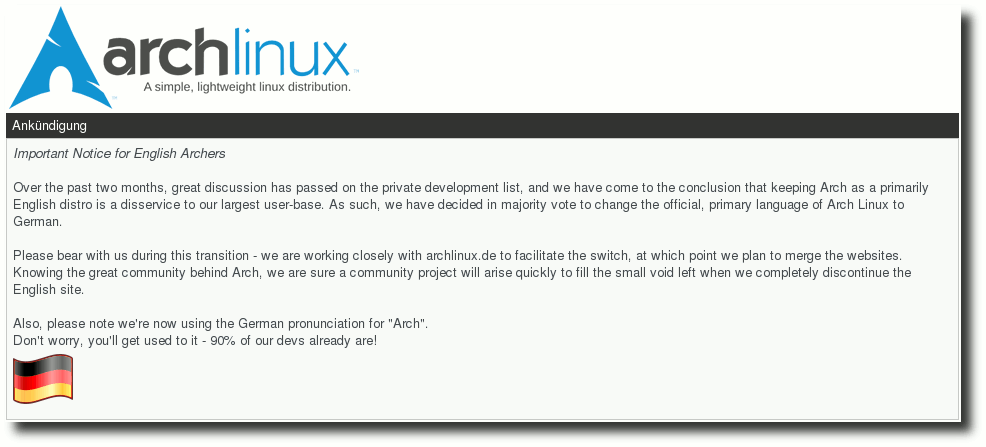
Deutsch als offizielle Sprache bei Archlinux.
Im anglo-amerikanischen Archlinux-Forum (Link) heißt es ,,Deutsch verdrängt Englisch und wird offizielle Sprache im Forum''. Nach langen Diskussionen hat man sich zur der Entscheidung durchgerungen (siehe Bild). Und: ,,Also, please note we're now using the German pronunciation for ,,Arch''. Don't worry, you'll get used to it - 90 % of our devs already are!'' Das muss man sich auf der Zunge zergehen lassen: ,,A..ch''. Und was meldet Linux Mint? ,,Linux Mint is merging with PCLinuxOS, Mepis and Slackware to form a single distribution called Apriloofix.'' (Link) An so einem Tag sollte einen gar nichts mehr überraschen. Als wäre das noch nicht genug, berichtet ,,Az-User'' im Forum von ubuntuusers.de noch von einer angeblichen ,,Backdoor in GNOME-Anwendung'' (genauer: im Spiel Tetris), über die der geneigte User ungewollt Root-Rechte erlangen kann. Dazu postet er noch einige nur auf den ersten Blick überzeugende Bildschirmfotos und es fallen sehr viele darauf herein (Link). Weiter geht's bei Ubuntu. Die Einstellung von Automatix (siehe dort (Link)) bewog einen Entwickler zu einem kleinem Jux. Er packte Automatix in ein Paket und lud es nach Universe hoch (Link). Auch im englischen Ubuntu Forums erlaubte man sich einige Streiche. Das Forum wechselte die Farben schneller als ein Chamäleon und die Moderatoren tauschten untereinander die Avatare aus oder stellten diese auf den Kopf. Alles natürlich gut dokumentiert (Link). Apropos ,,Wechsel'': Die beliebten Comic-Portale xkcd.com (Link), questionablecontent.net (Link) und qwantz.com (Link) wechselten für einen Tag ihre Startseiten aus, so dass auf xkcd.com plötzlich questionablecontent.net zu finden war, auf questionablecontent.net die Comics von qwantz.com und xkcd hatte es nach qwantz.com verschlagen. LinuxMint und Archlinux waren übrigens nicht die einzige Linux-Distributionen mit einem Aprilscherz. Kubuntu brachte Kubuntu 8.04 ,,Hippy Horse OMeGa pONEy'' heraus (Link). Allein das Artwork ist zum Niederknien. Wie immer ist auch Google mit von der Partie. Zum einen stellte man ,,Gmail Custom Time'' vor (Link). Damit wäre es möglich, die Absendezeit bei jeder E-Mail manuell einzustellen und auch auf die Vergangenheit zu datieren. Es ergeben sich ungeahnte Möglichkeiten. Etwas unglaubwürdiger war da schon gDay. Aufgrund vieler Daten und Voraussagen könne man so bereits die Webseiten von Morgen durchsuchen (Link). Ganz abgefahren war da aber schon Googles und Virgins Mars-Expedition (Link). Vor allem aber Scherze, in die Microsoft involviert war, gab es zuhauf. Nachdem OOXML ziemlich sicher ISO-Standard wird (siehe dort (Link)), meldete digistan.org, dass nach den ganzen Unregelmäßigkeiten radikale Reformen in der ISO stattfinden sollten. Selbst ein Umzug der ISO von Genf nach Aruba wurde aufgrund steuerlicher Vorteile erwogen - aber auch, weil die Musik dort besser sei (Link). Andere vermelden, dass Microsoft über die Gegenstimmen beim ISO-Prozess sehr verärgert sei und daher sein eigenes Normierungsinstitut namens ,,League of Extraordinary Standards'' (LES) gründen wolle (Link). Zusätzlich haben Microsoft und Novell angeblich openSUSE aufgegeben bzw. wollen deren Entwickler auf SUSE Windows ansetzen, ein Derivat von Microsoft Windows 7 (Link). Und wer schon immer den ,,Blue Screen of Death'' vermisst hat, kann sich auf Akonadi freuen (siehe dort (Link)). Dieser bringe einen eigenen Crash-Handler mit, der bei einem Fehler einen BSoD zeigt (Link). Nicht lachen konnten einige Leser über die Meldung des Cheese-Entwicklers, dass Apple ihn verklagen wolle (Link). Anscheinend war diese Meldung einfach zu nah an der Realität. 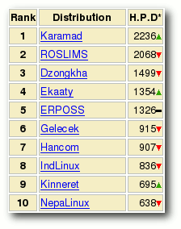
Neue Rangliste bei Distrowatch.
Daneben gab es noch viele kleine und größere Scherze rund um Linux oder die IT-Branche: UK will eine linuxsichere Firewall aufbauen (Link), kernel.org fällt kurzzeitig aus wegen Migration der Server auf FreeBSD 7.0 (Link), Mono heißt jetzt Duo (Link), Tim O'Really kündigt das Web 3.14159265358979323846... an (Link) und natürlich die neue Ranglistenreihenfolge bei Distrowatch (Link) (siehe Bild). Allgemeine Übersichten über Aprilscherze findet man bei Nerdcore (Link) und auch bei Spiegel Online (Link). Dort sind die fliegenden Pinguine der BBC wohl am Herausragendesten. (dwa, ths) Links
http://ubuntuusers.de/ikhaya/975/
http://ubuntuusers.de/ikhaya/976/
http://www.archlinux.org/
http://linuxmint.com/forum/viewtopic.php?f=17
http://forum.ubuntuusers.de/topic/163504/
http://www.sourcecode.de/content/damn%C2%B7now-john-fixed-bug-1-there-nothing-do-anymore
http://matthewhelmke.net/index.php/2008/04/01/47-ubuntu-forums-and-april-fool-s-day-part-2
http://www.xkcd.com/
http://questionablecontent.net/
http://qwantz.com/
https://wiki.kubuntu.org/HippyHorse/Omega/Kubuntu
https://mail.google.com/mail/help/customtime/
http://www.google.com.au/intl/en/gday/
http://www.google.com/intl/en/press/pressrel/20080401_virgle.html
http://press.digistan.org/published:iso-announces-radical-reforms
http://www.linux.com/feature/131073
http://boycottnovell.com/2008/03/31/opensuse-back-to-v4/
http://www.omat.nl/drupal/new-crash-handler-akonadi
http://home.cs.tum.edu/ siegel/news/2008_04_01-bye_bye_cheese
http://www.free-bees.co.uk/articles/penguin_proof_firewall/
http://lkml.org/lkml/2008/3/31/367
http://www.itwire.com/content/view/17401/1090/
http://www.linux.com/feature/131064
http://distrowatch.com/
http://www.nerdcore.de/wp/2008/04/01/april-april-2008/
http://www.spiegel.de/netzwelt/web/0,1518,544690,00.html
Zum Index
Motorola A1200 - Das tragbare Linux-System, Teil 1 von Hans-Joachim Baader
Das Smartphone Motorola A1200 wird in diesem Artikel vorgestellt. Obwohl es auf Linux beruht, muss man zunächst einige Arbeit aufwenden, um es zu einem wirklich offenen System zu machen. Vorwort
In diesem Artikel soll es hauptsächlich darum gehen, das Linux-basierte Smartphone Motorola A1200 anzupassen, so dass drei Dinge möglich werden, die (für mich) fundamental sind:
- Installation beliebiger Programme
- Zugang zur Kommandozeile
- Abspielen von freien Medienformaten, insbesondere Ogg-Audiodateien
Das Motorola-Smartphone A1200, auch Motoming oder einfach Ming genannt, wurde 2005 angekündigt und im März 2006 erstmals ausgeliefert. Es ist nicht offiziell in Deutschland oder in den USA erhältlich, jedoch in vielen anderen Regionen der Welt, so in ganz Asien, Russland, Lateinamerika, Italien und vermutlich in einigen mehr. Dementsprechend gibt es die Bedienoberfläche und die Anleitungen nicht auf Deutsch. Wer damit leben kann, die Oberfläche auf Englisch, Chinesisch, Japanisch, Französisch, Portugiesisch oder Spanisch präsentiert zu bekommen, könnte sich für das sehr kleine, leichte und äußerst elegant wirkende Gerät interessieren. Es gibt Handys, die noch etwas kleiner und leichter sind, auch von Motorola, ob diese aber genauso viele Features aufweisen, ist zweifelhaft. Das A1200 kann nicht nur telefonieren, sondern über GPRS auch eine Internet-Verbindung aufbauen (seit 2007 hat es auch EDGE-Funktionalität in der Variante A1200E). Die Hardware macht es zudem zur Aufnahme und Wiedergabe von Bildern (Kamera mit 2 Megapixel) und Videos, Sprachaufnahme, Audio-Wiedergabe sowie als mobiles Speichergerät (mit bis zu 4 GB Kapazität) und Radiogerät geeignet. Das Display ist als Touchscreen ausgelegt und wird durch einen durchsichtigen, hochklappbaren Deckel geschützt. Auf dem Deckel ist lediglich der Lautsprecher angebracht, ferner sind fast unsichtbar die Antennen eingearbeitet. Da er die beiden zum Telefonieren wichtigsten Tasten und den Joystick verdeckt, sind ohne Aufklappen des Deckels nur wenige Aktionen möglich. Das Aufklappen mit einer Hand gestaltet sich für manche Nutzer, die nicht die passende Handgröße haben, schwierig. Das Handy unterstützt USB und Bluetooth, UMTS und WLAN dagegen nicht.
Das Motorola A1200.
© Bráulio Nunes (Public Domain)
{kind=link}
Bezug
Das Motorola A1200 wurde gewählt, da es erstens ein Linux-System enthält und zweitens alle Funktionen, die man sich in einem Mobilgerät vorstellen kann, in einem einzigen kompakten Gerät vereinigt. Das System ist nicht gerade offen, doch sollte man mit einigen von Open-Source-Entwicklern angebotenen Werkzeugen die Einschränkungen umgehen können. Da beim Erwerb Anfang 2007 mit OpenMoko (Link) und erst recht mit Googles Mobilinitiative Android (Link) noch nicht zu rechnen war, schien das Gerät die bestmögliche Alternative. Ein Hindernis für den Erwerb war, dass das Gerät in Deutschland nicht offiziell auf dem Markt ist. Es gab zwar vereinzelte Angebote von Online-Händlern, doch deren Preise bewegten sich bei etwa 500 EUR. Auch eine Kombination mit Vertrag wäre möglich gewesen, doch wäre das langfristig nicht günstiger gewesen und durch die Vertragsbindung auch weniger flexibel. So wurde das Gerät bei yesasia.com (Link) bestellt, wo es ohne ,,Branding'' (ohne SIM-Karte und entsperrt) angeboten wurde. Die schwarze Ausführung kostete damals 380 US-Dollar. Mittlerweile ist das Gerät günstiger zu haben (Dezember 2007: 300 USD, rund 205 EUR), darunter auch Ebay-Angebote, bei denen man allerdings vorsichtig sein muss. Die in Hongkong angesiedelte Firma übernahm Versandkosten und Mehrwertsteuer, so dass das Gerät im Endeffekt 293 EUR kostete. Lieferumfang
Zu dem Smartphone gehören ein Kopfhörer mit eingebautem UKW-Empfänger, ein USB-Kabel, ein Netzteil, ein Ersatz-Stift für die Bedienung des Touchscreens, Handbücher und Software. Die auf den beiden CDs mitgelieferte Software kann man komplett vergessen, da sie nur unter Windows lauffähig ist. Das Netzteil ist für chinesische Steckdosen ausgelegt und kommt mit einem Adapter, der aber nicht in deutsche Steckdosen passt. Entweder sucht man einen passenden Adapter oder man begnügt sich damit, das Gerät über USB aufzuladen. Das Netzteil sollte sich aber auch durch ein universelles USB-Netzteil ersetzen lassen. Als Vorsichtsmaßnahme wird empfohlen, das Gerät auszuschalten, wenn der Akku fast leer ist und gerade keine Lademöglichkeit zur Verfügung steht. Die Software des A1200 beruht auf Linux Kernel 2.4.20 und Qtopia (Link), der angenehm zu bedienenden grafischen Smartphone-Oberfläche von Trolltech. Sie gestattet nicht nur die Nutzung sämtlicher Hardware-Features, sondern bringt auch komplette PIM-Funktionalität mit. 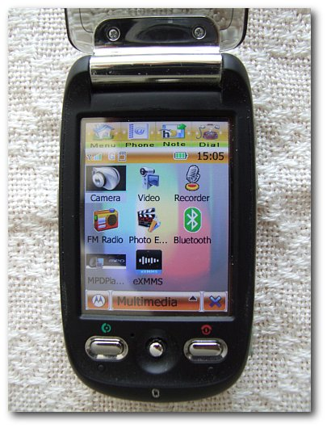
Ein neues Skin und einige Multimedia-Anwendungen.
Das Gerät kommt standardmäßig ohne Speicherkarte. Es besitzt einen internen Slot für eine Transflash (Micro-SD)-Karte mit bis zu 1 GB Größe (offiziell). Inoffiziell funktionieren aber auch Karten mit 2 GB (aber nicht alle), und es gibt erste Berichte, dass auch 4 GB vollständig nutzbar sind. Damit könnte jedoch ein Limit erreicht sein, falls das Gerät ein FAT16-Dateisystem nutzt und nur eine Partition angelegt wird. Ob dieses Limit auch gilt, wenn man mit FAT32 formatiert oder gar die Firmware aktualisiert und beispielsweise mit ext2 formatiert, ist nicht bekannt. Jedoch kann nicht jede Transflash-Karte verwendet werden (Link). Eine 2-GB-Karte von Sandisk wurde nicht erkannt und der Akku leergesaugt. Dem MotorolaFans-Forum (Link) zufolge sollen Kingston-Karten am zuverlässigsten funktionieren. Da ohne Speicherkarte kein Zugriff vom PC aus und somit auch keine Software-Installation möglich ist, empfiehlt es sich, gleich eine Transflash-Karte mit 1 bis 4 GB zu kaufen. Anfängliche Probleme
Zwei Arten von Problemen traten in der ersten Zeit auf. Die mangelnde Offenheit des Systems war bereits vorab bekannt und sollte durch ein Firmware-Update behoben werden. Das zweite waren vorhandene Fehler in der aktuellen Firmware, die Lösung dafür ist offensichtlich dieselbe. Mangelnde Offenheit trotz freier Software
Motorola hat seine Kernel-Quellen den Bestimmungen der GPL gemäß veröffentlicht. Die Verfügbarkeit der Quellen bedeutet jedoch nicht, dass es einfach wäre, daraus eine neue Firmware zu bauen. Am einfachsten wäre es wohl mit dem SDK von Motorola möglich, doch das ist proprietär. Komplizierter wird es, wenn man einen Cross-Compiler aufsetzen will. Immerhin sollte es theoretisch möglich sein, einen eigenen Kernel und neue oder geänderte Anwendungen in das Firmware-Image einzubauen. Vermutlich sind einige der im Umlauf befindlichen Firmware-Modifikationen auf diese Weise entstanden. Die Firmware beruht auf Kernel 2.4.20 und kann nicht ohne Portierung einiger Treiber auf Kernel 2.6 aktualisiert werden. Eine solche Portierung wird von einigen Entwicklern im OpenEZX-Projekt (Link) und neuerdings auch mit OpenMoko betrieben, ist jedoch noch nicht brauchbar. Die eingesetzte Oberfläche Qtopia war bis September 2007 proprietär (Link). Einige Anwendungen, die standardmäßig mitgeliefert werden, sind es vermutlich weiterhin. Ganz sicher gilt dies für Opera und RealPlayer. Die mitgelieferte Software zum Firmware-Update und zur Synchronisation läuft nur unter Windows, was man als Frechheit empfinden kann. Da bedient sich der Hersteller auf ziemlich unverschämte Weise der kostenlos verfügbaren Linux-Software (einschließlich Busybox und vielem mehr) und ignoriert sämtliche Linux-Desktop-Anwender. Vielleicht ist es auch besser so, denn diese Software genügt in keinster Weise den Qualitätsanforderungen, die man von freier Software gewohnt sind. Eine freie Software will das Projekt Moto4Lin (Link) schaffen, doch sieht dieses Projekt mittlerweile ziemlich tot aus. Firmware-Fehler und Anwendungs-Mängel
Verschiedene Firmware-Versionen hatten den Berichten im Forum zufolge verschiedene Fehler. So hatten manche Versionen eine schlechte Bild- und Videoqualität bei der Kamera. Die auf dem Motorola A1200 ursprüngliche Firmware, die 25p, hatte glücklicherweise nur ein Problem: Die anfängliche Lautstärke beim Telefonieren war so niedrig eingestellt, dass man vom Anrufer gar nichts hören konnte. Ein schnelles Hochschalten der Lautstärke mit der + -Taste bei einem ankommenden Anruf war als Workaround brauchbar. Im Setup des A1200 gibt es leider keine Möglichkeit, diese Einstellung zu beeinflussen. Ein weiterer Workaround wäre in Form eines Programmes möglich, das man installiert. Doch dazu müsste man es erst einmal installieren können. Mit den vorinstallierten Anwendungen kann man auch nicht ganz zufrieden sein. Als Medienplayer ist der Realplayer installiert, was ja akzeptabel wäre, wenn man ihn nicht der Fähigkeit beraubt hätte, freie Formate wie Ogg abzuspielen. Als absolutes Minimum muss daher ein neuer Medienplayer her. Doch wie installieren? Grundsätzlich können auf dem Motoming drei Arten von Anwendungen laufen: native Programme, die mit Qtopia erstellt wurden, Java-Programme für die Java-ME-Umgebung und andere native Programme einschließlich Skripten. Programme, die man auf dem Smartphone installieren kann, haben üblicherweise die Endung .pkg. Nun erlaubt es die Standard-Firmware nicht, unsignierte Anwendungen zu installieren. Eine gültige Signatur kann man aber wohl nur mit dem (proprietären) Motorola-SDK erstellen, was eine Hürde für freie Software-Entwickler darstellt. Ferner gibt es von Haus aus keine Möglichkeit, andere Programme oder Skripte auszuführen. Man kann also keine Shell öffnen und sich auch nicht per SSH oder Telnet auf dem Gerät einloggen. Die Kommandozeile bleibt zunächst unerreichbar. ,,Ming öffne dich''
In diesem Kapitel soll es darum gehen, wie man dem Ming zu Leibe rücken kann. Dazu muss zunächst einmal erläutert werden, welche Bedeutung verschiedene Varianten der Hard- und Firmware für das Ming haben. Dann wird der fehlgeschlagene Versuch beschrieben, zusätzliche Software zur Original-Firmware zu installieren, bevor man zum Firmware-Update kommt. Varianten
Vom A1200 gibt es mehrere Hardware-Varianten, die mit unterschiedlichen Firmware-Versionen ausgestattet sind. In diesem Artikel wird das A1200R behandelt, andere Varianten sind das originale A1200, A1200I für Lateinamerika und A1200E, die jüngste Variante mit EDGE. Komplex wird die Sache dadurch, dass nicht jede Firmware auf jeder Hardware läuft, was seine Ursache wohl zum Teil in unterschiedlichen Bootloadern hat. Man sollte jedenfalls sehr genau den Anleitungen auf MotorolaFans.com folgen und auch beachten, dass ein Firmware-Update unter Umständen nicht rückgängig gemacht werden kann. Genaueres über die Hintergründe findet man in den FAQs des MotorolaFans-Forums, dort findet man auch alle Einzelheiten zu den verfügbaren Firmware-Versionen. Welche Firmware man besitzt, findet man heraus, indem man die Nummer WWW008W wählt - hier steht W für eine Pause, die man übers Menü einfügen kann. Die erste Zeile gibt dabei die Firmware an, hier R532C2_G_11.31.25P, kurz anhand der letzten Zeichen als 25p bezeichnet. Diverse Tools, die von Open-Source-Entwicklern erstellt wurden, funktionieren aber leider nur mit der Vorgängerversion 24p. Fehlschlag mit Firmware p25
Theoretisch kann man die genannten Beschränkungen auf folgende Weise umgehen. Man benötigt dafür eine Flash-Karte. Auf dieser kann man vom PC aus die Programme LinLoader und MPKG installieren, wobei durch passende Einträge in einer (zum Glück textbasierten) Registrierung erreicht werden kann, dass das System die Programme als Icons im Programmstarter anzeigt und sie auch ausführen kann. Dabei dient LinLoader zum Ausführen von Skripten, was üblicherweise zur Installation weiterer Programme genutzt wird. So ist es auch Voraussetzung für MPKG. MPKG hingegen ist ein modifiziertes Paket-Installationsprogramm, das auch unsignierte Pakete akzeptiert. Für solche Pakete wurde die Endung .mpkg gewählt, damit sie beim Anklicken nicht vom ursprünglichen Installer geöffnet werden. 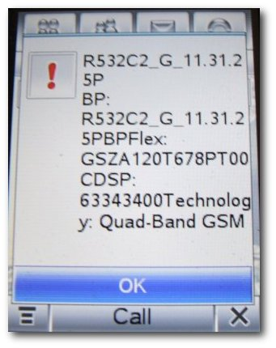
Das A1200 mit Original-Firmware.
Eine Alternative zu LinLoader und MPKG stellt Superman dar, ein Programm eines chinesischen Entwicklers, das zusätzlich Backup-Funktionen mitbringt. In der Firmware 25p ließ sich keines dieser Programme installieren, egal welche Variante man probierte. Vereinzelt gab es Erfolgsmeldungen von Anwendern der 25p-Firmware, doch überwiegend schienen diese Programme für andere Firmware-Ausgaben (einschließlich der 24p) geschrieben zu sein. Firmware-Update
Am 2.5.2007 gab es eine neue Firmware 30p. Erste Berichte über diese waren positiv, doch hätte die Originalfirmware das Problem der Software-Installation noch nicht gelöst. Interessant wurde es, als diverse Hacker Varianten der Firmware erstellten. Es wurde sich hier für die Installation des ,,Monsterpack'' von Mischka entschieden. Dies sollte neben Übersetzungen in Französisch, Spanisch und Portugiesisch auch diverse Korrekturen sowie das Programm Superman enthalten. Diese Firmware ist über das MotorolaFans-Forum als Datei A1200r_R532C2_G_11.30.30P_OENT_XP.rar (Link) zu bekommen. Beim Flashen sollte man genauestens der Anleitung auf MotorolaFans.com (Link) folgen. Um die Firmware zu flashen, benötigt man einen Windows-Rechner. Hierfür gibt es momentan keinen Workaround. Medien-Player
Jetzt kann man tatsächlich Programme wie den ZMPlayer installieren. ZMPlayer (Link) ist eine Portierung von MPlayer auf Mobilgeräte. Beim ersten Test war aber Ernüchterung angesagt: Dieses Programm ist ganz offenbar nicht für die Touchscreen-Bedienung, sondern für Handys mit Tastatur ausgelegt. Die Features ließen ebenso zu wünschen übrig wie die Bedienung und die Stabilität, und zudem hatte es zwei weitere ernsthafte Probleme. Erstens schien es Energiesparfunktionen zu deaktivieren oder zu behindern, was innerhalb einer halben Stunde den Akku leersaugte, und zweitens gab es Tonaussetzer, wenn man ein anderes Programm in den Vordergrund zu holen versuchte. Als Zweites kann man den MPDPlayer (Link) probieren. Dieser integriert sich besser ins System als ZMPlayer, hat aber auch weniger Features. Immerhin spielt er OGG-Dateien ohne Aussetzer und mit geringem Energieverbrauch ab. Doch noch wesentlich besser ist eXMMS Player (Link), eine erstaunlich originalgetreue Portierung von XMMS. Dieser Player ist sehr gut an die Gegebenheiten des A1200 angepasst und lässt sich hervorragend über den Touchscreen bedienen - mit den Fingern wird es allerdings schwierig, man sollte besser den Stylus verwenden. Das Programm, das erst in Version 0.1 vorliegt, bringt etliche Skins mit und überzeugt mit flexiblen Playlist-Funktionen (zufällige Reihenfolge beispielsweise) und gutem Sound. Im zweiten Teil dieses Artikels nächsten Monat wird der USB-Anschluss und die Einrichtung der Shell erklärt. Links
http://www.openmoko.org/
http://code.google.com/android/
http://www.yesasia.com/
http://qtopia.net/
http://www.sandisk.com/Compatibility/Device(8085)-Motorola-A1200.aspx
http://www.motorolafans.com/forums/
http://www.openezx.org/
http://www.pro-linux.de/news/2007/11741.html
http://moto4lin.sourceforge.net/
http://rapidshare.com/files/28648669/A1200r_R532C2_G_11.30.30P_OENT_XP.rar
http://www.motorolafans.com/forums/showthread.php?t=8128
http://www.motorolafans.com/forums/showthread.php?t=8635
http://www.motorolafans.com/forums/viewtopic.php?t=14022
http://www.motorolafans.com/forums/showthread.php?t=12429
http://www.expansys.com/f.aspx?m=565
http://moto4lin.sourceforge.net/wiki/FlashingEZX
http://developer.motorola.com/products/handsets/motominga1200/
https://opensource.motorola.com/sf/sfmain/do/viewProject/projects.a1200
Zum Index
YouTube-Videos in Totem abspielen von Christoph Langner
Mit dem Erscheinen von GNOME 2.22 (Link) wurde dem Multimediaplayer Totem die Möglichkeit gegeben, direkt Videos von YouTube (Link) wiederzugeben. Dazu muss kein Flashplayer installiert werden, der normalerweise für die Darstellung der Flash-Videos notwendig ist. So kann man ohne Werbung und mit einer komfortablen Suchfunktion YouTube-Videos betrachten. Für die Benutzung muss neben GNOME 2.22 und Totem das Paket python-gdata installiert werden. Anschließend kann man in Totem unter ,,Bearbeiten » Plugins » Youtube Plugin'' das Plugin aktivieren. Links
http://library.gnome.org/misc/release-notes/2.22/
http://www.youtube.com/
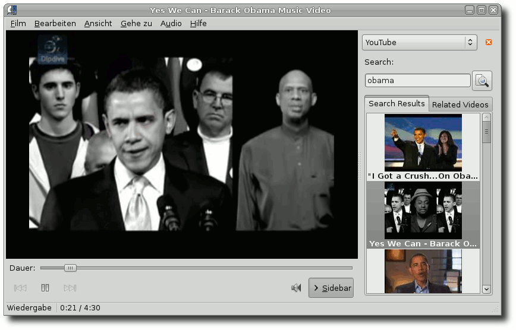
Totem spielt nun auch Videos von Youtube.
Zum Index
Tux-Bastelstunde von Dominik Wagenführ
Letzten Monat war Ostern und zu dieser Zeit bastelt man gerne: Eier bemalen, Osternester erstellen oder Osterflaschen basteln (Link). Für den Linux-User von Welt ist dies natürlich nichts, denn da zählt nicht der Osterhase, sondern maximal ein Osterpinguin. Aus diesem Grund basteln wir diesen Monat einen solchen. 3-D-Tux
Der 3-D-Tux ist schon relativ alt. So alt, dass es nicht einmal mehr möglich war, die Originalquelle zu finden. Es gibt Versionen als JPG-Bild (Link) (Link), welche angeblich von www.pricoinsa.es bzw. www.linux-en-touraine.org stammen. Hier fehlt aber die Bastelanleitung, die Qualität der Bilder ist nicht sehr gut und vor allem wurde Werbung auf den armen Tux gedruckt. Besser ist da die PDF-Version (Link) (Achtung, spanischer Link!), die auf www.premiumink.com und www.thepapershaper.com zurückgeht. Die erste Website ist aber nicht erreichbar, die zweite wurde anscheinend (vor langer, langer Zeit) gecrackt. Immerhin hat der spanische Blogger das PDF gerettet. Nach dem Ausdrucken des PDFs hat man auf Seite 1 die Tux-Einzelteile und auf Seite 2 die Bastelanleitung in Englisch. Die Instruktionen sind teilweise etwas unklar, daher gibt es hier eine kleine Übersetzung. Sinnvoll ist es, nur eine oder zwei Laschen auf einmal mit Kleber zu bestreichen und festzukleben.
- Zunächst fügt man den Kopf zusammen (Laschen 1-13). Am besten klebt man zuerst die Nase (Laschen 1-2) und dann den Rest zusammen.
- Dann wird der Rumpf geformt (Laschen 15-29). Die Hinterseite des Tux bleibt dabei offen. Rechts und links sollten durch die Faltung zwei dreieckige Löcher für die Flügel bleiben.
- Man bastelt die zwei Flügel (Laschen 30-32 und 33-35).
- Die Laschen 36-43 der Flügel werden mit Kleber bestrichen und durch die Löcher im Rumpf gesteckt. Auf der Innenseite drückt man diese dann fest.
- Die Füße werden gerollt und an den Laschen 44 und 45 geklebt. Die Seite mit den vielen Laschen (46-50 und 51-55) werden durch die Löcher in den Füßen gesteckt, mit Kleber bestrichen und umgeknickt. Man sollte darauf achten, dass die Klebestelle von Lasche 44 und 45 nach hinten zeigt. Danach klebt man die Unterseite der Füße auf die Oberseite, so dass die Laschen verschwinden (ggf. zurechtschneiden).
- Lasche 56 und 57 rollt man nun, steckt sie durch die Löcher des Rumpfes, streicht innen Kleber darauf und drückt die Laschen fest. Man sollte darauf achten, dass die Füße nach vorne zeigen. Wenn man alles richtig gemacht hat, kann man die Füße nach vorne einknicken.
- Als Nächstes bestreicht man die Laschen 58-64 des Kopfes mit Kleber und setzt diesen auf den Rumpf. Die Laschen werden wieder auf der Innenseite des Rumpfes durch das Loch im Rücken festgedrückt.
- Zum Schluss kann man die restlichen Laschen 65-71 zukleben. Ein Zahnstocher hilft beim Druck ausüben.
- Der Tux sollte immer außerhalb von Wärme gehalten werden, da er die kalten antarktischen Tage gewohnt ist. ;)
3-D-Tux aus Papier.
Den 3-D-Tux kann man im übrigen auch als Maxi-Version erstellen, wie ,,Jonesky'' auf seiner Seite (Link) zeigt. Origami-Tux
Dies ist kein Tux im wirklichen Sinne, sondern ein normaler Pinguin, aber dennoch lustig anzuschauen. Eine Origami-Anleitung gibt es von Frantisek Grebenicek (Link) und - da wir uns ja im Zeitalter des Web 2.0 befinden - natürlich auch als Video von Michael Webb (Link). Es gibt dazu noch eine zweite Version von Margaret Van Sicklen (Link), deren Pinguin auch stehen kann. Die Version von Valerie Vann (Link) ist etwas komplizierter, sieht dafür aber auch super aus. Und Kinder düften mit dieser etwas einfacheren Version (Link) nicht zu kurz kommen. Und nun viel Spaß beim Basteln! :) Ach, wer einen Osterpinguin haben will, kann ja noch zwei lange Papierohren an den Pinguinkopf kleben. Links
http://www.kikisweb.de/ostern/basteln/osterflasche.htm
http://www.gdruckman.com/2007/12/22/diy-paper-tux/
http://www.tuxhuellas.com/2006/12/04/origami-de-tux/
http://www.techno.mayix.net/2006/07/09/paper-tux/
http://forum.hardware.fr/hfr/OSAlternatifs/Divers-2/mascotte-papier-sujet_29666_1.htm
http://www.23hq.com/Jonesky/photo/315407
http://www.siskiyous.edu/NCTA/origami/penguin/
http://www.expertvillage.com/video/5945_easy-origami-penguin.htm
http://www.laurenstringer.com/diagrams/penguin.html
http://ori-l.mvg-ori.nl/models/bookmark/ppenguin.pdf
http://www.activityvillage.co.uk/origami_penguin.htm
Zum Index
Firefox-Erweiterungen sichern mit CLEO von Dominik Wagenführ
Die Abkürzung CLEO steht für Compact Library Extension Organizer. Das kleine Hilfsmittel ermöglicht eine einfache Sicherung und Wiedereinspielung gesicherter Firefox-Erweiterungen. Der Artikel enstand auf Basis von ,,Package all your Firefox extensions for quick installs with CLEO'' (Link). Installation
Es kommt vor, dass man von einem PC zu einem anderen umzieht und alle Firefox-Erweiterungen gerne mitnehmen würde. Hier hilft CLEO (Link). Die Firefox-Erweiterung für die Browser-Versionen 2.0 bis 3.0b kann man einfach von der Mozilla-Seite (Link) herunterladen. Bevor das Programm funktioniert, muss man noch FEBE (Firefox Environment Backup Extension) (Link) installieren. Nach einem Neustart des Browsers findet man das Programmm unter ,,Extras » FEBE » CLEO''. Optionen
Die Optionen findet man unter ,,Extras » FEBE » CLEO » CLEO Optionen''. Man kann dort einstellen, was bei der Erstellung eines Sicherungspaketes mit gleichem Namen passiert. So lassen sich zum Beispiel neue Erweiterungen leicht zu einem bestehenden Paket hinzufügen (,,Hinzufügen'') oder das alte Paket komplett überschreiben (,,Überschreiben''). Im Reiter ,,Ordner'' kann man einstellen, in welchem Verzeichnis die Pakete gespeichert werden sollen. 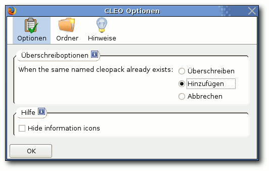
Die CLEO-Optionen.
Benutzung
Über ,,Extras » FEBE » CLEO » Create cleopack'' kann man die Firefox-Erweiterungen, die im XPI-Format vorliegen müssen, sichern. Man hat also entweder bereits die Erweiterungen von der Mozilla-Seite heruntergeladen oder exportiert die aktuell installierten Erweiterungen über ,,Extras » FEBE » Sicherung erstellen''. Gegebenenfalls muss man noch einen Ordner angeben, an dem die XPI-Dateien gespeichert werden. Wenn man dann CLEO aufruft, kann man über den Knopf ,,Einträge auswählen'' die XPI-Dateien hinzufügen, die gepackt werden sollen. Ganz oben gibt man einen Paketnamen ein und klickt unten bei ,,Cleopack description'' auf ,,automatisch erzeugen''. Mit einem Klick auf ,,Create cleopack'' wird eine Datei PAKETNAME.xpi im angegeben Ordner gespeichert. Über den Menüpunkt ,,Extras » FEBE » CLEO » View cleopack info'' kann man sich die Informationen zum Paket, die man zuvor eingeben hat, anschauen. (Im Test bemängelte das Programm aber die fehlende CLEO.cif, obwohl sie vorhanden war.) Jetzt kann man das erstellte XPI-Paket auf einen anderen Rechner transportieren und dort wie gewohnt per Doppelklick installieren. CLEO und FEBE sind hierfür nicht notwendig. Links
http://www.linux.com/feature/125268
http://customsoftwareconsult.com/extensions/cleo/cleo.html
https://addons.mozilla.org/en-US/firefox/addon/2942
https://addons.mozilla.org/en-US/firefox/addon/2109
Zum Index
Fun mit Phun von Dominik Wagenführ
Phun (Link) ist eine 2-D-Physik-Simulation, die von Emil Ernerfeld als Master-Arbeit an der Umeå-Universität in Schweden geschrieben wurde. Das Programm kann zum einen zur reinen Spielerei benutzt, aber auch im Unterricht eingesetzt werden, um verschiedene physikalische Prozesse aus der Mechanik spielerisch darzustellen. Das Programm ist (noch) Closed-Source, kann aber frei für den nicht-kommerziellen Einsatz verwendet werden. Installation und Start
Die Beta-Version von Phun kann von der Downloadseite (Link) als vorkompilierte Binärdatei sowohl für 32- als auch 64-bit-Rechner heruntergeladen werden. Nach dem Entpacken des Archivs muss man nur die Datei phun im Ordner Phun ausführen. Sollte das Programm nicht starten, ruft man es am besten im Terminal auf: $ cd Phun $ ./phun
Sieht man eine Fehlermeldung der Art ./phun: error while loading shared libraries: libGLEW.so.1.5: cannot open shared object file: No such file or directory
sollte man versuchen, Phun per $ LD_LIBRARY_PATH=. ./phun
zu starten. Neben einer hardwarebeschleunigten Grafikkarte wird auch die libsdl verlangt, ehe das Programm startet. Ohne Hardwarebeschleunigung läuft es zwar auch, aber vor allem bei komplexen Szenen, die Wasser enthalten, wird das Ganze sehr langsam. Prinzipiell ist Phun aber recht speicher- und CPU-hungrig, so dass man auf einem schwachen PC wenig Freude haben wird. Etwas Abhilfe kann das Abschalten der Wolken in den Optionen (siehe unten) bringen. Möchte man Phun für alle Benutzer installieren, kann man den Ordner Phun mit Root-Rechten nach /opt verschieben: # cp -r Phun /opt/
Danach muss man mit Root-Rechten ein kleines Startskript /usr/local/bin/phun in einem Editor anlegen #!/bin/bash cd /opt/Phun LD_LIBRARY_PATH=. ./phun
und dieses nach dem Speichern noch ausführbar machen: # chmod +x /usr/local/bin/phun
Man kann Phun nun per Eingabe von phun von überall starten. Bedienung
Es soll hier keine komplette Übersicht gegeben werden, sondern nur eine kleine Einführung in die einzelnen Werkzeuge und Optionen. Eine genaue Erklärung findet man auf der Webseite (Link) und es gibt einige Tutorials (Link). Vor allem das Beispielvideo auf YouTube (Link) zeigt sehr gut, was Phun alles kann. 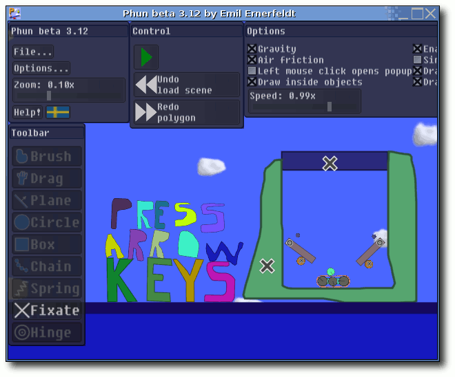
Die Startszene von Phun: Ein Flipper.
Menü
Im Menü ,,File...'' kann man einzelne Szenen laden, speichern, importieren oder die aktuelle Szene löschen. Gespeicherte Szenen liegen im Ordner Scenes als phn-Datei und können auch direkt mit einem Texteditor bearbeitet werden. Navigation
In einer Szene selbst kann man mit dem Mausrad zoomen und mit der rechten Maustaste den Hintergrund fixieren und umherschieben. Alternativ kann man auch rechts auf den Hintergrund klicken und über das aufspringende Menü die Szene verschieben und in sie zoomen. Zusätzlich gibt es links oben unter den Optionen noch die Möglichkeit, den Zoom per Schieberegler einzustellen. Objekte wählt man aus, indem man sie anklickt oder mit dem Brush-Werkzeug einkreist. Ausgewählte Objekte blinken und lassen sich gemeinsam verschieben oder drehen. Das Verschieben eines ausgewählten Objektes geschieht über die linke Maustaste, die man festhalten muss. Eine Rotation erhält man über die festgehaltene rechte Maustaste. Hält man Strg gedrückt und verschiebt ein Objekt, kopiert man es. Ein Objekt löscht man, in dem man es markiert und Entf drückt oder einen Strich mit dem Brush- oder Drag-Werkzeug darüber zeichnet. Hat man eine Szene erstellt, kann man über den großen, grünen Abspielknopf die Animation starten und danach wieder pausieren. Werkzeuge
Über den Rechtsklick auf ein Objekt erhält man je nach Objekttyp ein neues Menü mit zusätzlichen Eigenschaften. Bei fast allen kann man Folgendes unter ,,Geometry settings...'' einstellen:
- ,,Friction'' - Reibung zwischen 0.0 und 2.0
- ,,Bounciness'' - Abprallstärke zwischen 0.0 und 1.0
- ,,Density (weight)'' - Dichte (Gewicht) zwischen 0.0001 und 100.0
- ,,Collides with stuff'' - legt fest, ob das Objekt mit der Umgebung interagiert
- ,,Liquefy selected'' - ausgewählte Objekte in Wasser transformieren
- ,,Add center hinge'' - ein Gelenk an den Mittelpunkt setzen (soweit möglich)
Die Optionen von Phun.
Die einzelnen Werkzeuge sind im Einzelnen:
- ,,Brush'' - Dies zeichnet Freihand-Polygone. Hält man die Taste Shift fest, zeichnet man gerade Linien. Zusätzlich kann man hierüber Objekte markieren und löschen (siehe oben). Brush-Objekte können per ,,Transform into circle'' in einen Kreis umgewandelt werden.
- ,,Drag'' - Hierüber kann man alle nicht fixierten Objekte während der Animation bewegen. Während der Aufbauphase kann man nur fixierte Objekte damit bewegen.
- ,,Plane'' - Zeichnet eine Ebene, wobei der Richtungspfeil (Normalenvektor) mit der Maus vorgegeben wird. Eine Ebene besitzt nur die Eigenschaften ,,Friction'' und ,,Bounciness''.
- ,,Circle'' - Erstellt einen Kreis, wobei man zuerst den Mittelpunkt angibt und dann bei festgehaltener linker Maustaste die Größe (Radius) des Kreises bestimmt.
- ,,Box'' - Erstellt ein Rechteck. Hält man Shift gedrückt, entsteht ein Quadrat. Box-Objekte können per ,,Transform into circle'' in einen Kreis umgewandelt werden.
- ,,Chain'' - Hiermit erstellt man eine Kette zwischen zwei Objekten oder dem Hintergrund und einem Objekt, die aus mehreren Kreisen und Klemmen besteht. Die Kette wird automatisch mit einer Klemme an einem Objekt fixiert, falls möglich. Man kann separat die Eigenschaften der Kreise und der Klemmen einstellen. Zusätzlich gibt es noch die Option ,,Dissolve chain'', mit der man die Verbindung auflöst.
- ,,Spring'' - Erstellt eine Feder zwischen zwei Objekten. Zieht man die Objekte danach auseinander oder drückt sie zusammen, dehnt sich die Feder oder wird gespannt. Über die Optionen ,,Spring strength'' und ,,Spring damping'' kann man die Stärke der Feder zwischen 0.001 und 1.0 und die Dämpfung zwischen 0.0 und 2.0 einstellen.
- ,,Fixate'' - Fixiert ein Objekt mit einer Klemme. Es wird grundsätzlich das Objekt mit dem dahinterliegenden fixiert. Liegt kein Objekt dahinter, wird es am Hintergrund fixiert. Die Größe der Klemme ist abhängig vom Zoomfaktor.
- ,,Hinge'' - Gelenke fixieren ein oder zwei Objekte, machen sie aber zusätzlich beweglich/drehbar in diesem Punkt. Jedes Gelenk kann mit einem ,,Motor'' versehen werden, der automatisch arbeitet oder manuell durch die Cursortasten bedient werden kann. Zusätzlich lässt sich die Drehrichtung (,,Reversed''), die Geschwindigkeit (,,Motor speed'') zwischen 0 und 2400 UpM und die Motorstärke (,,Motor strength'') zwischen 0 und unendlich (,,+inf'') einstellen
Im Optionsfenster gibt es relativ wenig Einstellmöglichkeiten:
- ,,Gravity'' - schaltet die Gravition an/aus
- ,,Air Friction'' - Luftwiderstand an/ausschalten
- ,,Left mouse click opens popup'' - linke Maustaste = rechte Maustaste
- ,,Draw inside objects'' - innerhalb von Objekten zeichnen
- ,,Speed'' - Geschwindigkeit der Simulation einstellen
- ,,Enable shaders'' - Schattierungen de/aktivieren (falls von der Grafikkarte unterstützt)
- ,,Simple water rendering'' - Wasser vereinfacht/komplett darstellen
- ,,Draw Hinges/Fixes when running'' - bei der Animation Gelenke und Klemmen ein/ausblenden
- ,,Draw clouds'' - Wolken im Hintergrund ein/ausblenden
Als simples Beispiel soll ein Auto gebastelt werden.
- Hierfür fügt man zuerst eine Ebene (,,Plane'') hinzu, deren Pfeil nach oben zeigt.
- Danach wählt man das ,,Brush''-Werkzeug und zeichnet die Karosserie schwebend über den Boden. Wichtig ist, dass die Animation dabei nicht läuft.
- Jetzt aktiviert man die Option ,,Draw inside Objects'', zeichnet ein erstes Rad (,,Circle''), deaktiviert ,,Draw inside Opjects'' wieder, markiert dass eben erstellt Rad, hält Strg fest und zieht eine Kopie an die andere Seite des Autos.
- Danach wählt man beide Kreise aus ( Strg beim Anklicken festhalten), und fügt über ,,Add center hinge'' ein Gelenk hinzu. Wichig ist, dass das Gelenk auch über der Karosserie liegt.
- Dann wählt man die beiden Gelenke aus und wählt ,,Motor'' in den Optionen.
- Zum Schluss spielt man die Animation ab und freut sich über das Gefährt. ;)
Das Phun-Auto.
Probleme
Phun ist noch in der Beta-Phase, was man an einigen Stellen merkt. Bei Problemen empfiehlt es sich, das Phun-Forum (Link) aufzusuchen. Einer der größten Bugs ist, dass das Programm nicht-deterministisch ist. Das bedeutet, startet man eine Szene mehrmals, sieht das Ergebnis verschieden aus, was in manchen Fällen sehr ärgerlich ist. Dennoch macht Phun sehr viel Spaß und man kann damit locker einige Stunden ,,Physik lernen''. ;) Links
http://www.phun.at/
http://phun.cs.umu.se/wiki/Download
http://phun.cs.umu.se/wiki/Tutorial
http://phun.cs.umu.se/forum/viewforum.php?id=14
http://www.youtube.com/watch?v=0H5g9VS0ENM
http://phun.cs.umu.se/forum
Zum Index
LinuxMint: elegant - aktuell - komfortabel? von Wolfgang Fogl
Auf der Seite von Distrowatch gehört LinuxMint schon seit längerem zu den Top-Ten der beliebtesten Distributionen. Grund genug, sich einmal genauer damit zu befassen. Ursprung
Als erstes kann man sich natürlich fragen: ,,Wozu braucht die Welt denn noch ein Ubuntu-Derivat?'' Diese Frage war zumindest in den Anfangstagen von LinuxMint, das im August 2006 das erste Release hatte, durchaus berechtigt. Hatte diese Distribution doch außer einigen vorinstallierten Codecs und einer anderen Zusammenstellung der Standardprogramme gegenüber Ubuntu nichts Neues zu bieten. Dies sollte sich jedoch mit den darauffolgenden Releases ändern. 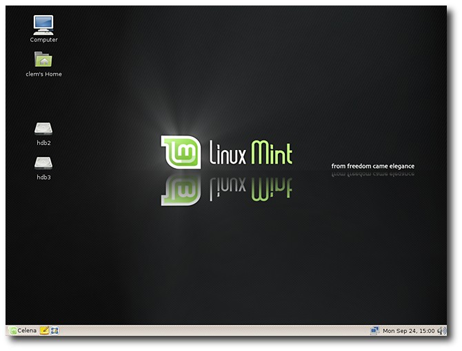
Der Standarddesktop von LinuxMint.
Bevor wir uns mit den vom LinuxMint-Team entwickelten Features befassen, sollte kurz festgehalten werden, wie es überhaupt zur Entstehung dieser Distribution kam. Kurz gesagt: Nachdem der Maintainer von LinuxMint, Clement Lefebvre, sich nach eigener Aussage eine gewisse Zeit dem virtuellen Sport des ,,Distro-Hoppings'' hingab und diverse Tutorials und Reviews geschrieben hatte, bekam er eine genaue Vorstellung davon, wie er selbst die ,,perfekte'' Distribution gestalten würde. Gesagt - getan. Und so erblickte LinuxMint das Licht der Welt. Installation
Es wurden schon unzählige Artikel und Tutorials über Ubuntu und dessen Installation geschrieben. Da Mint aufgrund der Ubuntu-Basis ebenso als Live-CD daherkommt und denselben Installer (Ubiquity) verwendet, wird hier nicht näher auf den Installationsprozess eingegangen. Die Installation läuft genauso leicht und sicher ab wie bei der Mutter-Distribution. Man kann im wahrsten Sinne des Wortes sagen: ,,Dasselbe in Grün!'' Unterschiede zu Ubuntu
Wo liegen denn also nun die Unterschiede zwischen Mint und Ubuntu? LinuxMint stellt einige selbstentwickelte Werkzeuge zur Verfügung, um den ohnehin schon sehr leicht zu bedienenden Desktop von Ubuntu noch ein wenig benutzerfreundlicher zu machen. mintassistant
Der erste Unterschied begrüßt einen schon beim ersten Login in das frisch installierte System. mintassistant fragt vom Benutzer sogleich zwei Einstellungsmöglichkeiten ab:
- Soll der root-Account aktiviert werden?
- Sollen die ,,fortunes'' beim Start des Terminals erscheinen?
Der Einstellungsassistent von LinuxMint.
Ersteres ist wohl für erfahrenere User interessant, die den verantwortungsbewussten Umgang mit root beherrschen, kurz, die wissen, was sie damit tun können und besser lassen sollen, um nicht jedesmal ein sudo vor jedem Kommando eintippen zu müssen. Die zweite Frage betrifft zwar eine nette Spielerei, ist jedoch völlig irrelevant. Desktop
Der Desktop ist elegant und aufgeräumt gestaltet. Der nächste Unterschied zum Ubuntu-Standard-Desktop wird ersichtlich: Bei Mint kommt der GNOME-Desktop mit nur einem Panel aus - damit kann man fürs Erste durchaus leben (auch wenn der Panel-Hintergrund in meinen Augen ein künstlerischer Fehlgriff ist). Im Vergleich zum braun gehaltenen Ubuntu-Desktop erscheint der grün-blau-schwarze Desktop um einiges eleganter und frischer, aber - um eine ausgelutschte Floskel zu verwenden - über Geschmack sollte man und lässt sich nicht streiten ... 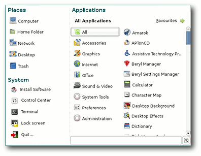
Das Menü.
mintMenu
Weiter geht's mit dem Menü, von dem schon oftmals die Rede war. Das komplett neu in Python geschriebene mintMenu ähnelt dem Menü von SLED und Windows Vista sehr stark; über die eingebaute Suchfunktion lassen sich alle Programme sehr leicht auffinden. Allerdings muss die Frage erlaubt sein: ,,Wofür brauche ich diese Suchfunktion überhaupt?'' Kenne ich doch den Namen eines Programms, brauche ich ihn doch nicht erst in der Menü-Suche eingeben, um ihn anschließend anklicken zu können, sondern starte es einfach über Alt+F2. Nun gut, dieser Meinung bin ich auch, da sich Mint jedoch Benutzerfreundlichkeit auf die Fahnen geschrieben hat, kann man dies als Hilfe für Ein- und Umsteiger durchgehen lassen. Eine brauchbare Funktion hingegen ist die Ablage bestimmter Programme in den Favoriten des Menüs. So kommt man schneller an die oft verwendeten Programme heran! Negativ fällt auf, dass das Menü beim ersten Start, insbesondere auf älteren Rechnern, eine sehr bzw. zu lange Ladezeit hat. Dies gilt im Übrigen für die gesamte Geschwindigkeit des GNOME-Desktops, verglichen mit beispielsweise dem Desktop eines reinen Debian-Systems. Doch damit haben alle Distributionen, die auf dem sehr trägen Unterbau von Ubuntu basieren, zu kämpfen - dies ist eben der Preis, den man bezahlt, wenn das System schon in der Grundausstattung möglichst viel Hardware-Unterstützung für möglichst viele Rechnertypen bereitstellen will und aus diesem Grund ein Patch nach dem anderen eingespielt wird. Nichtsdestotrotz könnten die Entwickler an einigen Ecken und Enden ein klein wenig tunen. Doch zurück zum eigentlichen Thema: Insgesamt ist das Menü sehr gelungen und in jedem Fall eine Bereicherung für den oftmals als langweilig und bieder verschrieenen GNOME-Desktop. mintInstall
Mit dem Werkzeug mintInstall kann man Software über das Mint-eigene Software-Portal mit wenigen Mausklicks installieren. Dies ist insofern interessant, da man Software, die (aus verschiedensten Gründen) nicht in den Repositorien zu finden ist, wie z. B. Skype oder Opera, bequem und schnell herunterladen und installieren kann. Das Software-Portal findet man im Netz unter (Link) oder man steigt im Menü über ,,System » mintInstall » Zum Software-Portal gehen'' ein. 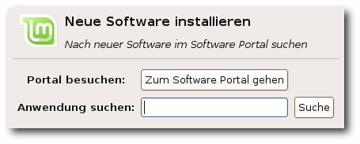
Die Paketverwaltung.
mintUpdate
Da der Ubuntu-Updatemanager in der Vergangenheit diverse Sicherheitslücken aufwies, wurde er kurzerhand durch das Tool mintUpdate ersetzt. Je nachdem, als wie sicher ein Update eingestuft wird, markiert mintUpdate dieses in Stufen von 1 bis 5. Standardmäßig werden nur die Stufen 1 bis 3 angezeigt; die Sicherheitsstufen 4 und 5 können jedoch leicht über das Einstellungsmenü angezeigt bzw. mitinstalliert werden. Durch dieses Tool sollen unerfahrene User davor bewahrt werden, das System durch ,,blindes'' Updaten zu gefährden. Über dieses Feature gehen die Meinungen von Geeks und Möchtegern-Geeks weit auseinander - lassen wir es einfach als ein ,,Präventiv''-Werkzeug für Einsteiger stehen ... 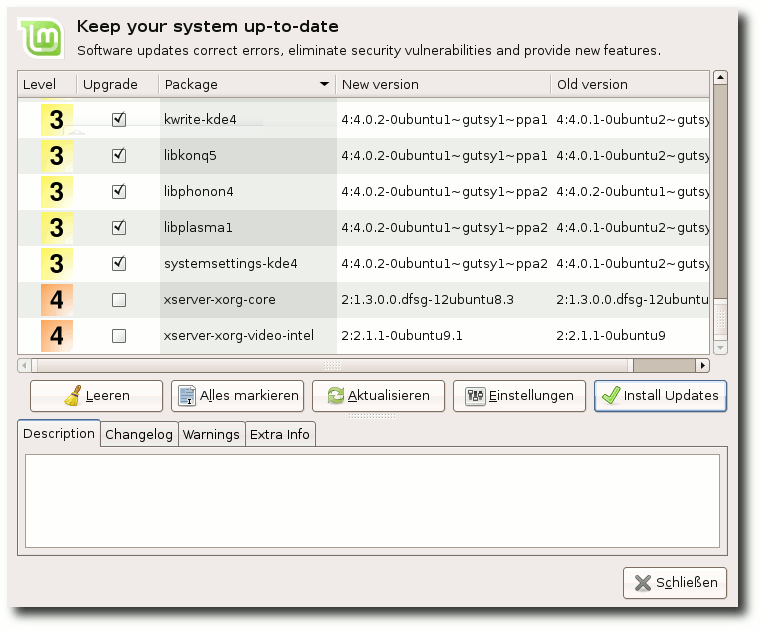
Die Aktualisierungsverwaltung.
mintDesktop
Mit mintDesktop kann man einige Einstellungen vornehmen, welche sich sonst nur umständlich über den Konfigurationseditor vornehmen lassen. Zum Beispiel ist es nach einem Upgrade von OpenOffice.org damit leicht zu bewerkstelligen, den Mint-Splash-Screen dieser Anwendung wiederherzustellen. Dieses Tool ist besonders für den Desktop der XFCE Community Edition, der für Einsteiger etwas schwieriger zu konfigurieren ist, eine wertvolle Hilfe. mintUpload
Das letze Tool ist mintUpload. Dieses Werkzeug erlaubt es dem User, durch wenige Mausklicks Dateien ins Netz hochzuladen, um diese für Freunde und Bekannte zugänglich zu machen. Es geht sehr einfach und ist vor allem für Leute interessant, die keinen eigenen Webspace besitzen und sich nicht bei irgendeinem Anbieter registrieren wollen. Nach dem Hochladen der Datei(en) erhält man einen Link zu diesen, den man anschließend per E-Mail verschicken kann. Die Einschränkungen für diesen kostenlosen Dienst sind:
- Die Uploads dürfen maximal 10 MB groß sein.
- Die Uploads werden nach zwei Tagen automatisch gelöscht, um den Speicher wieder frei für andere User zu machen.
Werkzeug zum Hochladen für Dateien.
Editionen
Neben der Main-Edition mit dem GNOME-Desktop gibt es noch eine GNOME-Light-Edition (für Verfechter von Freier Software und User, die in Ländern leben, in denen das Anbieten proprietärer Software untersagt ist, da diese keine patentierte oder anderweitig geschützte Bestandteile enthält), und die beiden von der Community entwickelten ,,KDE und XFCE Community Editions''. 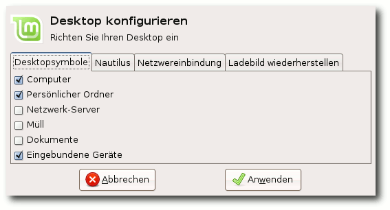
Einstellungsdialog anstelle Konfigurationseditor.
Fazit und Kritik
Alles in allem ist LinuxMint tatsächlich eine benutzerfreundliche Distribution. Der Slogan ,,from freedom came elegance'' trifft auf das sehr ansprechende und gut durchdachte Design auf jeden Fall zu. Bleibt zu hoffen, dass dieser klare und elegante Stil auch in den folgenden Releases (die nächste wird LinuxMint 5.0 ,,Elyssa'' sein) beibehalten wird und es nicht zu einem, in meinen Augen, vollkommen verkorksten Erscheinungsbild kommt, wie es die aktuell favorisierten Vorschläge für das neue Design für Ubuntu 8.04 ,,Hardy Heron'' befürchten lassen. Aber auch das wäre nun wieder eher etwas für einen Artikel mit dem Titel: ,,Über die Sinnlosigkeit eines Streits über den Geschmack!'' Leider ist die Main Edition aufgrund ihrer Trägheit für ältere und schwächere Rechner absolut ungeeignet, und Besitzer solcher Hardware sollten auf die XFCE Community Edition zurückgreifen. Weiterer Kritikpunkt ist, dass bei Mint scheinbar wahllos und meines Erachtens oft auch ohne Grund GTK- und Qt-basierte Programme trotz guter Alternativen durcheinander gemischt werden, beispielsweise Amarok statt Exaile, K3b statt Brasero; dies trägt ebensowenig zu einem flüssigen Desktop bei, wie allgemein der momentane Fokus der meisten Distributionen auf (überflüssige) Effekte wie Compiz, anstatt dass man mehr Augenmerk auf essentielle Dinge wie einen brauchbaren Network-Manager legt. Erfreulich hingegen ist die (noch als Spielerei betrachtete) Erwägung, irgendwann einmal Debian Testing als Basis für LinuxMint zu verwenden. Warten wir's ab, womit uns Clem und sein Team noch überraschen werden. All das zusammenfassend behaupte ich, dass es momentan keine einsteigerfreundlichere Distribution in der Linux-Welt gibt, da der Einsteiger ein vollständig (auch mit allen Codecs) ausgerüstetes System vorfindet und ihm die Mint-eigenen Tools die ersten Schritte deutlich erleichtern. Ob stärker interessierte User LinuxMint jedoch dauerhaft oder überhaupt nutzen werden, wage ich zu bezweifeln, da einem doch durch viele GUIs der Weg ins System verborgen bleibt. Anyway, ich ziehe den Hut und verbeuge mich tief vor den Machern von LinuxMint für diese erstklassige Distribution! Macht weiter so! Hilfe und weitere Informationen findet man auf der Homepage (Link), im offiziellen LinuxMint-Forum (Link) und im deutschsprachigen LinuxMint-Portal (Link). Des Weiteren stehen die beiden IRC-Channel #linuxmint.com und #linuxmintusers.de auf irc.spotchat.org zur Verfügung. Links
http://www.linuxmint.com/software
http://www.linuxmint.com/
http://www.linuxmint.com/forum/
http://www.linuxmintusers.de/
Zum Index
Interview: Tobias König über die Entwicklung von Akonadi von Emanuel Goscinski
Tobias König (Link) ist Informatikstudent und einer der Hauptentwickler von Akonadi (Link), eine der innovativen Technologien, die es noch nicht in die erste Version von KDE 4 (Link) geschafft haben. Akonadi soll eine plattformunabhängige, innovative Speicherlösung für persönliche Daten werden. Im Interview mit kubuntu-de.org (Link) erzählt Tobias König über seine Einbindung in die Entwicklung der KDE-Desktopumgebung (Link) und die Entwicklung und Funktionen von Akonadi.
Tobias König auf den Chemnitzer-Linux-Tagen 2008 mit Konqui auf der Schulter.
kubuntu-de.org: Du bist ja sehr stark in die KDE-Entwicklung eingebunden. Was machst du, wenn du dich gerade nicht mit KDE beschäftigst?
Tobias König: Wenn ich nicht gerade an KDE entwickle, studiere ich Allgemeine Informatik an der HTW Dresden. Nebenbei arbeite ich als freier Mitarbeiter für die credativ GmbH. kubuntu-de.org: Wer ist die credativ GmbH und was machen sie?
Tobias König: Die credativ GmbH bietet Dienstleistungen rund um Freie Software an. Ein Großteil der Mitarbeiter kommt auch aus dem Open-Source-Umfeld, so zum Beispiel dem Debian-Projekt (Link) oder von Postgres (Link). Aber auch ein paar KDE-ler arbeiten da. :) kubuntu-de.org: Könnte man also sagen, du hast dein Hobby zum Beruf gemacht?
Tobias König: Ja, sozusagen. :) Hauptsächlich bin ich aber noch Student für die nächsten zweieinhalb Jahre. kubuntu-de.org: Also rund um die Uhr mit Open-Source-Software beschäftigt. ;) Könntest du uns erzählen, in welchen KDE-Projekten du überall aktiv bist und welche Aufgaben du dort übernommen hast?
Tobias König: ,,Zu Hause'' bin ich im KDE-PIM-Projekt (Link). Das ist ein Subprojekt von KDE, welches sich mit Personal Information Management, also Kalendern, Adressbüchern und E-Mails, befasst. Neben der Betreuung von KAddressBook helfe ich bei der Entwicklung von Akonadi, dem neuen PIM-Storage. Während der Portierung von KDE 3 auf KDE 4 habe ich aber auch hier und da in den Kernbibliotheken von KDE mitgearbeitet. kubuntu-de.org: Akonadi ist ein gutes Thema. Könntest du erläutern, was genau das ist? Gibt es nicht schon genug Groupware-Lösungen, die versprechen, mit allen möglichen Dateitypen zurecht zu kommen?
Tobias König: Das Wichtigste zuerst: Akonadi ist kein Groupware-Server! Akonadi ist vielmehr ein Zwischenspeicher und eine Abstraktionsschicht für PIM-Daten, ähnlich wie Phonon für Multimedia oder Solid für Hardware. Akonadi abstrahiert den Zugriff und die Verwaltung der Daten für das restliche System (z. B. dem Adressbuch oder dem Kalender), indem es alle Daten über eine einheitliche Schnittstelle anbietet. Das bringt einige Verbesserungen gegenüber KDE 3: 1. Die PIM-Daten müssen nur einmal im Speicher gehalten werden. 2. Man hat eine zentrale Instanz, welche jede Veränderung der Daten mitbekommt und somit andere Komponenten über diese Veränderungen informieren kann. 3. Das ganze Akonadi-Framework verfolgt einen asynchronen Kommunikationsansatz - ein Blockieren der Benutzerschnittstelle beim Laden oder Speichern von Daten sollte nicht mehr vorkommen. kubuntu-de.org: Das ist ja schon mal eine ganze Menge. So wie ich das jetzt verstanden habe, wird der Zugriff auf die PIM-Daten einfacher und trotz zusätzlicher Software auch schneller. Wie wirkt sich das ganze für den einfachen Otto-Normalnutzer aus? In KDE 3 gab es ja auch schon zahlreiche Möglichkeiten, mehrere Programme auf eine Ressource zugreifen zu lassen. Kopete und Konversation können ja beispielsweise mit Kontact synchronisiert werden. Worin besteht also der Unterschied dazu?
Tobias König: Der Benutzer profitiert von Akonadi, da es keine Inkonsistenzen zwischen den verschiedenen Darstellungen auf dem gesamten Desktop geben wird. Ändert man einen Kontakt im Adressbuch, aktualisiert sich auch gleich das Plasmoid, welches Geburtstage anzeigt. Der Speicherverbrauch wird ebenfalls geringer, da nur noch der Akonadi-Server alle Daten im Speicher behalten muss.
Es ist nun auch möglich, die PIM-Daten besser in andere KDE-Programme zu integrieren. Neben dem Namen des Eigentümers einer Datei könnte z. B. auch sein Bild im Dateiberechtigungsdialog angezeigt werden. Da die Komponenten, welche die Daten zwischen dem Akonadi-Server und der Datenquelle (z. B. Groupware-Server) transportieren, in separate Prozesse ausgelagert sind, führt eine schlecht programmierte Komponente auch nicht gleich zum Absturz des gesamten Systems. Die abgestürzte Komponente wird einfach wieder neu gestartet und die Daten werden neu geladen. kubuntu-de.org: Das riecht ja förmlich nach Innovation! Werden mit Akonadi auch neue oder verbesserte Ressourcentypen kommen?
Tobias König: Die Hauptaufgabe wird sein, die existierenden Ressourcen auf Akonadi zu portieren. Durch die saubere, asynchrone Schnittstelle in Akonadi dürfte sich die Zuverlässigkeit der Ressourcen zudem verbessern. Im Moment wird zum Beispiel gerade an einer Ressource für den Zugriff auf MS Exchange gearbeitet. Die Entwickler des alternativen KDE-E-Mail-Programms Mailody entwickeln zudem eine Ressource, welche auf Daten mittels IMAP zugreift. Damit ist der KDE-Client für den Kolab Groupware Server nicht mehr auf KMail angewiesen, sondern kann direkt über Akonadi mit dem Kolab-Server kommunizieren. kubuntu-de.org: Und das wird mit KDE 4.1 umgesetzt sein?
Tobias König: KDE 4.1 wird Akonadi als Entwicklerplattform enthalten. Das bedeutet, dass die APIs stabil sind und man den Dienst benutzen kann. Es werden aber höchstwahrscheinlich noch nicht alle PIM-Programme von Akonadi Gebrauch machen, da es einfach an den Entwickler-Ressourcen fehlt. kubuntu-de.org: Also wird KDE 4-PIM von Anfang an auf Akonadi aufsetzen?
Tobias König: Ja, aber wir haben da auch einen Migrationspfad geplant, womit man das alte Ressource-Framework in Akonadi integrieren bzw. über das alte Ressource-Interface auf Akonadi zugreifen kann. kubuntu-de.org: Wie kann man sich in die Entwicklung einbringen?
Tobias König: Einfach die KDE-PIM-Entwickler auf kde-pim@kde.org oder auf #kontact kontaktieren und fragen, wo man helfen kann. Gerade das Portieren einiger Ressourcen auf die Akonadi-API sollte ein guter Einstieg in die Akonadi-Welt sein. kubuntu-de.org: Die Entwicklung von Akonadi war ja länger etwas ... mmmh ... langsam verlaufen. Was habt ihr für die nächste Zeit geplant, um den Rückstand einzuholen?
Tobias König: Der etwas langsame Entwicklungsverlauf ist hauptsächlich dem Mangel an Entwicklern geschuldet. Im Moment wird die Hauptentwicklungsarbeit von drei bis vier Leuten betrieben (wobei ich das Engagement von Volker Krause hervorheben möchte, ohne ihn wäre das Projekt sicher schon eingeschlafen!), von denen zwei Vollzeit arbeiten und die anderen beiden studieren bzw. an ihrem Diplom arbeiten ... Da bleiben nur die Abendstunden oder Entwicklertreffen zum Hacken. Apropos Entwicklertreffen: Über das Osterwochenende wird es ein Akonadi-Hacking-Meeting im KDAB Office in Berlin geben. Dort werden wir dann die API nochmals überarbeiten und überprüfen. Im April findet ja der API-Freeze statt. Hoffentlich kommen wir auch noch dazu, einige fehlende Features zu implementieren (vielleicht verstecken wir auch ein paar Easter-Eggs ;)). kubuntu-de.org: Das hört sich alles sehr spannend und innovativ an. Was uns als Kubuntu-Nutzer besonders interessiert: Welche Distribution nutzt du?
Tobias König: Debian Unstable. ;) Das hat aber historische Gründe. Zu der Zeit, als ich mein System aufgesetzt habe, gab es noch kein Ubuntu. Und seit dem sah ich keinen Grund für eine Neuinstallation. :) kubuntu-de.org: Nutzt du KDE 4 eigentlich schon für deine tägliche Arbeit? Und wenn ja, wie zufrieden bist du zurzeit damit?
Tobias König: Ja, ich verwende KDE 4 schon seit ca. drei Monaten. Am Anfang war es nicht so schön, dass jeden zweiten Tag der Plasma Desktop nicht funktionierte, aber inzwischen ist es stabil und man kann durchaus damit arbeiten.
Allerdings sollte man damit leben können, dass hier und da noch nicht alles reibungsfrei läuft. Gerade in der aktuellen Version (mit Qt 4.4 Beta) gibt es noch einige Ungereimtheiten, was das Fenstermanagement anbelangt. Dem Otto-Normalbenutzer würde ich aber empfehlen, weiterhin KDE 3.5 zu verwenden und frühestens mit 4.1 umzusteigen. kubuntu-de.org: Hast du noch etwas, was du der Welt mitteilen möchtest?
Tobias König: Akonadi rocks! :) kubuntu-de.org: Dann danken wir für diesen Einblick in die Entwicklung von Akonadi und freuen uns auf die Innovationen! Vielen Dank für das Interview.
Tobias König: Bitte sehr, gern geschehen :) Lizenz: Dieser Artikel unterliegt der Creative-Commons-Lizenz ,,Attribution-Share Alike 2.5 Generic''.
Links
http://tokoe-kde.blogspot.com/
http://kdepim.kde.org/akonadi/
http://www.kubuntu-de.org/nachrichten/software/kde/kde-4-0-mit-kubuntu-paketen-erschienen
http://www.kubuntu-de.org/
http://www.kde.de/
http://www.debian.org/
http://www.postgresql.org/
http://kdepim.kde.org/
Zum Index
XHTML, HTML und CSS von Hans-Joachim Baader
Umfangreiche Bücher sind heutzutage nicht unbedingt ungewöhnlich. Doch ,,XHTML, HTML und CSS'' des Webdesigners, Autors und Dozenten Frank Bongers weist selbst für Computerbücher einen außergewöhnlichen Umfang auf. 1200 Seiten und ein entsprechendes Gewicht machen das Werk weniger geeignet für schwache Handgelenke. Das sollte zu verschmerzen sein, da das Buch hauptsächlich als Referenz- und Nachschlagewerk für die Arbeit am PC gedacht ist. Die Frage, die sich nun stellt, ist, ob die Seiten sinnvoll gefüllt sind oder nur unnötiger Ballast produziert wurde. Ich hoffe, hier eine Antwort geben zu können. Das Buch
Die ersten Kapitel geben einen Überblick über die Themen des Buches. Kapitel 1 erläutert HTML, XHTML, CSS und ihre Verwandschaftsbeziehungen. Kapitel 2 geht auf die Syntax ein und erläutert die prinzipiellen Unterschiede zwischen HTML, das eine Anwendung von SGML ist, und XHTML, das eine Anwendung von XML ist. Das nächste Kapitel beschreibt die Grobstruktur eines Dokuments, also Kopf- und Rumpfteil, ebenfalls wieder mit den Unterschieden zwischen HTML und XHTML. Kapitel 4 und 5 widmen sich der Syntax und den Seitengestaltungs-Möglichkeiten von CSS, ohne in die Tiefe zu gehen. Zwar spielt auch in den folgenden Kapiteln CSS eine Rolle, und in Kapitel 19 wird eine vollständige Referenz geliefert, doch nach Ansicht des Autors ließen sich bereits über CSS und Seitenlayout dicke Bücher schreiben, so dass zur Vertiefung von CSS nur auf weitere Literatur verwiesen wird. Das sechste Kapitel heißt ,,(X)HTML im Contentbereich'' und beschreibt ganz allgemein, welche Auszeichnungen man bei der Gestaltung der Inhalte in Webseiten verwenden sollte. Selbstverständlich werden alle gestalterischen Einstellungen über CSS vorgenommen. Besonders geht der Autor auf Hyperlinks, Überschriften, Container, Bilder, Listen, Tabelle und Formulare ein. Das siebte Kapitel dreht sich ausschließlich um die Navigation. Zunächst wird erläutert, was für Arten von Navigation man unterscheidet, dann gibt der Autor Hinweise und Beispiele zur Realisierung. Wesentlicher Punkt ist dabei die Erstellung von Menüs, die sowohl funktional als auch ansprechend sein sollen. Hier hat sich für die horizontalen und vertikalen Menüs, die auch Untermenüs enthalten können, eine Implementation mit Listen durchgesetzt, die einschließlich einiger CSS-Beispiele klar und ausführlich beschrieben wird. Im achten Kapitel ,,Code-Aktualisierung nach XHTML'' gibt der Autor Tipps, wie eine Webpräsenz, die auf obsoletem oder nicht standardkonformem HTML-Code beruht, auf einen aktuellen Stand gebracht werden kann. Dies ist der richtige Ort, um HTML Tidy vorzustellen. Dieses Werkzeug kann den Code automatisch in standardkonformes HTML oder XHTML umwandeln. Für eine gut gepflegte Seite ist danach noch einiges an Handarbeit erforderlich, doch ist mit HTML Tidy zumindest einmal der automatisierbare Teil abgedeckt. Zwei Kurzbeschreibungen von grafischen Frontends für HTML Tidy runden das Kapitel ab. Das nächste Kapitel ,,Webdesign für mobile Clients'' beleuchtet die technischen Einschränkungen, die Mobilgeräte im Allgemeinen mit sich bringen. Sie stellen den Designern einige Hürden in den Weg. Die Größe und insbesondere die Breite der Darstellung muss an die Gegebenheiten angepasst werden. Der Autor gibt hier aufschlussreiche Hinweise, wie dies zu lösen ist, und stellt auch Möglichkeiten zum Testen der Lösungen vor, wenn man nicht direkt auf einem Mobilgerät, sondern auf dem Desktop testet. Die Barrierefreiheit war mehr oder weniger bereits in allen Kapiteln vertreten, in Kapitel 10 wird sie jedoch noch einmal zusammengefasst und vertieft. Absolute Barrierefreiheit gibt es dem Autor zufolge nicht, allenfalls Barrierearmut. Diese ist jedoch unbedingt anzustreben, sonst sperrt man eine signifikante Zahl von Benutzern von seinen Webseiten aus. Nach Angaben der Autors gelten in Deutschland 8 % der Bevölkerung als schwerbehindert, wobei der Anteil mit dem Alter zunimmt, aber auch bei jungen Benutzern keinesfalls vernachlässigbar ist. Glücklicherweise ist bei strikter Befolgung von XHTML mit CSS bereits automatisch einiges für die Barrierearmut getan, Weiteres lässt sich mit entsprechenden Tools prüfen. Oft genügt bereits ein textbasierter Browser für eine erste Einschätzung der bisherigen Arbeit. Die vom Autor aufgestellten Checklisten sind ein weiteres nützliches Werkzeug. Kapitel 11 ,,Werkzeuge für Webdesigner'' geht auf Editoren (Text und spezielle HTML-Editoren), Toolbars, Bildschirmlineale, Farbtools, Browser-Plugins sowie nochmals auf Textbrowser ein. Der Autor ist recht begeistert von Nvu, der zwar nach seiner Ansicht noch nicht mit den bekanntesten Produkten Dreamweaver und GoLive mithalten kann, aber mit Firefox-Plugins erweiterbar ist und somit viel Potential birgt. Die dann folgende Sammlung von Werkzeugen, die jeweils in einer Kurzbeschreibung vorgestellt werden, ist eindrucksvoll und nützlich. Es ist auch reichlich Material für Open-Source-Entwickler vertreten. Die bisherigen Kapitel waren jeweils um die 30 Seiten lang. Kapitel 12 sprengt diesen Rahmen und schlägt auch thematisch eine andere Richtung ein. Es setzt die einführenden Kapitel fort, indem es die HTML-Sprachfamilie ausführlicher beschreibt. Es ist ein eher theoretisches Kapitel, das für die Praktiker weniger wichtig ist, und beginnt mit einem Abriss der Geschichte von HTML. Dabei werden auch Varianten vorgestellt, die nie offiziell wurden. XHTML in Version 1.0 und 1.1 sowie ein Ausblick auf Version 2.0 werden ebenso präsentiert wie die Varianten von HTML für Mobilgeräte von cHTML über iMode bis HTML 4.0 Mobile und XHTML für mobile Endgeräte. Zum grundlegenden Verständnis des Referenz-Kapitels und zum Nachschlagen dürfte dieses Kapitel nützlich sein. Womit sich Kapitel 13 ,,XForms und XFrames'' beschäftigt, ist offensichtlich. Es handelt es sich um eine kurze einführende Darstellung der entsprechenden Spezifikationen, von denen XFrames noch nicht praxisrelevant ist, da es laut dem Autor keine funktionierende Implementierung gibt. Themen des Kapitels sind verfügbare Implementierungen von XForms, der Sprachumfang und Module, und dann natürlich der Umgang mit XForms. Ein- und Ausgabefelder, Validierung, Verknüpfung mit XML Schema und einiges mehr kommen zur Sprache. Es folgt das Kapitel, das den größten Teil des Buches einnimmt und auch seinen wesentlichen Wert ausmacht: die (X)HTML-Elementreferenz in Kapitel 14. Das Kapitel ist so umfangreich, dass es ein eigenes Vorwort besitzt. Auf 500 Seiten werden alle Elemente in epischer Breite dargelegt. Der Autor hat hier auch inoffizielle und veraltete Elemente und Attribute aufgenommen, um so eine wirklich vollständige Referenz zu erstellen. Es ist nicht die reine Auflistung der rund 90 in (X)HTML definierten Tags, die das Kapitel so umfangreich (und so nützlich) macht. Vielmehr sind es die praktischen Erfahrungen des Autors mit aktuellen Browsern (Internet Explorer 5 bis 7, Mozilla ab 1.5, Firefox ab 1.0 und Opera ab 7.0), die alle für Web-Entwickler bedeutsamen Unterschiede (und Fallen) herausstellen. Jedes Tag wird mit allgemeinen Eigenschaften, Beispielen, Angaben zur Darstellung in den Browsern und Attributen, letztere wiederum mit allgemeinen Eigenschaften, Beispielen und Hinweisen, behandelt. Dabei nehmen die Attribute, wie man sich leicht vorstellen kann, wesentlich mehr Raum ein als die Tags selbst. Allein das <a>-Tag besitzt 6 Standard-, zahlreiche Eventhandler-, 15 W3C- (davon zwei abgeschafft) und 14 browserspezifische Attribute. Bei dieser Menge kann man nicht einmal mehr mit Sicherheit sagen, ob man richtig gezählt hat. Sollte es auch nur die geringste Unklarheit über die Unterschiede der Attribute in verschiedenen Standards oder Implementierungen geben, kann man sicher sein, sie hier zu finden. Nach den Attributbeschreibungen gibt es zu jedem Tag noch eine ausführliche Beschreibung und umfangreiche Angaben zur Barrierefreiheit. Eine alphabetische Referenz aller Attribute stellt Kapitel 15 dar. Es ist unterteilt in die bei fast allen Tags gültigen Standard-Attribute, die Standard-Eventhandler-Attribute und proprietäre Erweiterungen. Die Beschreibungen sind hier kurz, mehr findet man ja in der Elementreferenz. Es folgen eine kurze Referenz der HTML-Entities (Kapitel 16), URL-Encoding und Language-Codes (Kapitel 17) sowie Farben und Farbwerte (Kapitel 18). Kapitel 19 stellt eine CSS-Referenz dar und ist mit 140 Seiten das zweitgrößte Kapitel. Hier wird alles Wissenswerte über CSS zusammengefasst, was teilweise bereits in den Kapiteln 4 und 5 angerissen wurde. Nun kommen ausführlich die Syntax, die Regeln, die Selektoren für CSS 1 und CSS 2, Werte und Maßeinheiten und natürlich insbesondere die Properties für CSS 1 und CSS 2 zur Sprache. Abgerundet wird das Kapitel durch browserspezifische Properties, Doctype-Switching und das CSS-Boxmodell. Die drei Anhänge listen ausführlich die relevanten W3C-Spezifikationen (,,Ressourcen''), weitere Ressourcen und den Inhalt der CD auf. Die beiliegende CD enthält alle Beispiele, meist HTML-Dateien, aus dem Buch, Werkzeuge sowie Plugins und Toolbars für Mozilla und Firefox. Bei den Werkzeugen wurde auch an Linux gedacht, beispielsweise mit den Web-Editoren Arachnophilia, Nvu und Quanta. Fazit
Ausführlich, umfassend und vollständig, das sind Vokabeln, die sich einem angesichts des schieren Umfangs von ,,XHTML, HTML und CSS'' immer wieder aufdrängen. Auch in meiner Rezension konnte ich sie nicht vermeiden. Für eine Erstauflage ist dieser Umfang geradezu phänomenal. Ein solches Werk kann nicht in einigen Wochen oder Monaten entstanden sein. Hier wurden merklich Jahre an Erfahrung eingebracht. Im Vorwort schreibt der Autor auch entsprechend, dass Vollständigkeit sein Ziel war. Ich denke, dass dieses Ziel erreicht wurde, zumindest annähernd. Wieviel Aufwand tatsächlich in das Werk investiert wurde, können wir nur erahnen, wenn Frank Bongers beiläufig wiederholte Terminüberschreitungen erwähnt. Schon eine Stunde gesparte Arbeit amortisieren die Kosten der Anschaffung dieses Buches. Selten fiel es mir leichter, eine Kaufempfehlung auszusprechen, denn die Anschaffung wird sich für jeden Web-Entwickler schnell auszahlen. Natürlich kann es nicht schaden, auch weitere Bücher zu diesem Thema anzuschaffen - ein Schreiner hat ja auch nicht nur eine Säge. Kaufen! Auch Einsteiger in die Materie sollten mit dem Buch problemlos zurechtkommen, da alles Notwendige in den ersten Kapiteln erklärt wird. Wer mehr vorhat als sich nur in die Grundlagen von HTML einzuarbeiten, kann ,,XHTML, HTML und CSS'' durchaus auch zum Lernen verwenden.
| Infos | |
| Titel | XHTML, HTML und CSS |
| Autor | Frank Bongers |
| Verlag | Galileo Press, 2007 |
| Umfang | 1200 Seiten |
| ISBN-10 | 978-3-89842-443-1 |
| Preis | 49,90 EUR |
Veranstaltungskalender
Jeden Monat gibt es zahlreiche Anwendertreffen und Messen in Deutschland und viele davon sogar in Ihrer Umgebung. Mit diesem Kalender verpassen Sie davon keine mehr. Hinweis: Ein Strich (-) als Angabe bedeutet, dass diese Information zur Zeit der Veröffentlichung noch nicht vorhanden war.
| Anwendertreffen | ||||
| Datum und Uhrzeit | Ort | Treffpunkt | Termin steht fest? | Link |
| 07.04.08, 19:30 Uhr | Krefeld | Limericks | ja | http://wiki.lug-kr.de/wiki/LugTreffen |
| 08.04.08, 19:00 Uhr | Lüneburg | Comodo | ja | http://luene-lug.org/wp/ |
| 09.04.08, 19:00 Uhr | Langen | Alte Scheune | ja | http://www.lalug.net |
| 09.04.08, 19:00 Uhr | Luwigsburg | VfB-Gaststätte Tamm | ja | http://linuxwiki.de/LugLudwigsburg/Treffen |
| 09.04.08, 20:00 Uhr | Herford | Recyclingbörse | ja | http://lug-owl.de/Events |
| 10.04.08, 19:00 Uhr | Dortmund | Kronenstübchen | ja | http://ubuntu-do.de/ |
| 10.04.08, 20:00 Uhr | Bremen | Maschinenraum | ja | http://wiki.ubuntuusers.de/Anwendertreffen/Bremen |
| 11.04.08, 19:00 Uhr | Kreuzlingen | InetCenter | ja | http://www.linuxtreff.ch |
| 12.04.08, 16:00 Uhr | Erfurt | Le Gaulois | ja | http://wiki.ubuntuusers.de/Anwendertreffen/Erfurt |
| 12.04.08, 17:30 Uhr | Mannheim | Leib & Seele | ja | http://wiki.ubuntuusers.de/Anwendertreffen/Mannheim |
| 14.04.08, 19:00 Uhr | Dortmund | Kronenstübchen | ja | http://ubuntu-do.de/ |
| 14.04.08, 20:00 Uhr | Ottobrunn | Weinstube | ja | http://www.lug-ottobrunn.de |
| 14.04.08, 20:00 Uhr | Paderborn | Feuerstein | ja | http://lug-owl.de/Events |
| 15.04.08, 20:00 Uhr | Fulda | Academica Fulda | ja | http://lug.rhoen.de |
| 16.04.08, 19:30 Uhr | Eisenach | Cafe Spiegler | ja | http://lug-eisenach.de/ |
| 16.04.08, 20:00 Uhr | Rheda-Wiedenbrück | Jägerheim | ja | http://lug-owl.de/Events |
| 17.04.08, 18:00 Uhr | Zürich | ZHdK | ja | http://informator.vmk.zhdk.ch/GnusUndPinguine |
| 17.04.08, 19:00 Uhr | Wolfsburg | Institut für Industrieinformatik | ja | http://www.lug.wolfsburg.de/ |
| 17.04.08, 20:00 Uhr | Marburg | Jornal | ja | http://www.mr-lug.de/Stammtisch.3.0.html |
| 18.04.08, 19:00 Uhr | Kreuzlingen | InetCenter | ja | http://www.linuxtreff.ch |
| 20.04.08, 10:00 Uhr | Passau | ZAKK | - | http://wiki.ubuntuusers.de/Anwendertreffen/Passau |
| 21.04.08, 19:00 Uhr | Wolfsburg | Institut für Industrieinformatik | ja | http://wiki.ubuntuusers.de/Anwendertreffen/Wolfsburg |
| Anwendertreffen | ||||
| Datum und Uhrzeit | Ort | Treffpunkt | Termin steht fest? | Link |
| 21.04.08, 19:30 Uhr | Bielefeld | Unimax | ja | http://lug-owl.de/Events/ |
| 23.04.08, 19:00 Uhr | Luwigsburg | VfB-Gaststätte Tamm | ja | http://linuxwiki.de/LugLudwigsburg/Treffen |
| 25.04.08, 19:00 Uhr | Kreuzlingen | InetCenter | ja | http://www.linuxtreff.ch |
| 26.04.08, 18:00 Uhr | Rendsburg | Ruby Days | ja | http://wiki.ubuntuusers.de/Anwendertreffen/Rendsburg |
| 28.04.08, 20:00 Uhr | Ottobrunn | Weinstube | ja | http://www.lug-ottobrunn.de |
| 28.04.08, 20:00 Uhr | Detmold | Zum Neuen Krug | ja | http://lug-owl.de/Events/ |
| 29.04.08, 19:00 Uhr | Lüneburg | Comodo | ja | http://luene-lug.org/wp/ |
| 30.04.08, 19:30 Uhr | Eisenach | Cafe Spiegler | ja | http://lug-eisenach.de/ |
| Messen | ||||
| Veranstaltung | Ort | Datum | Eintritt | Link |
| Linux Tag | Krems | 15.04.08 | frei | http://lug.krems.cc/linuxtag2008/ |
| Linux Tag | Graz | 19.04.08 | frei | http://www.linuxtage.at/ |
| Linux Workshop | Wolfsburg | 03.05.08 | frei | http://www.lug.wolfsburg.de |
| LUG Camp | Flensburg | 01.05.-04.05.08 | 45 EUR | http://www.lug-camp-2008.de |
| Linux Tag | Salzburg | 06.05.08 | frei | http://www.linuxwochen.at |
| Linux Tage | Wien | 15.05.-17.05.08 | frei | http://www.linuxwochen.at |
| LinuxTag | Berlin | 28.05.-31.05.08 | 9 EUR | http://www.linuxtag.org |
| Linux Tage | Eisenstadt | 30.05.-31.05.08 | frei | http://eisenstadt.linuxwochen.at/ |
Konventionen
An einigen Stellen benutzen wir Sonderzeichen mit einer bestimmten Bedeutung. Diese sind hier zusammengefasst:
| $: | Shell-Prompt |
| #: | Prompt einer Root-Shell - Ubuntu-Nutzer können hier auch einfach in einer normalen Shell ein ,,sudo'' vor die Befehle setzen. |
| : | Kennzeichnet einen aus satztechnischen Gründen eingefügten Zeilenumbruch, der nicht eingegeben werden soll. |
| ~: | Abkürzung für das eigene Benutzerverzeichnis /home/BENUTZERNAME |
Vorschau
freiesMagazin erscheint immer am ersten Sonntag eines Monats. Die Mai-Ausgabe wird voraussichtlich am 4. Mai unter anderem mit folgenden Themen veröffentlicht:
- Motorola A1200 - Das tragbare Linux-System, Teil 2
- Interview: Harald Sitter über Amarok und KDE 4
- andLinux - Das Schaf im Wolfspelz
Zum Index
| Impressum | |
| freiesMagazin erscheint als PDF und HTML einmal monatlich. | |
| Redaktionsschluss für die Mai-Ausgabe: 23. April 2008 | |
| Redaktion | |
| Eva Drud ViSdP | |
| Dominik Wagenführ | |
| Satz und Layout | |
| Eva Drud | |
| Kontakt | |
| Postanschrift | freiesMagazin |
| c/o Eva Drud | |
| Rübenkamp 88 | |
| 22307 Hamburg | |
| Webpräsenz | http://www.freiesmagazin.de |
| Logo-Design | |
| Arne Weinberg | |
| Lizenz | GNU FDL |
| Erscheinungsdatum: 6. April 2008 | ||
| Erstelldatum: 7. April 2008 | ||
| Autoren dieser Ausgabe | ||
| Hans-Joachim Baader | ||
| Ronny Fischer | ||
| Wolfgang Fogl | ||
| Emanuel Goscinski | ||
| Christoph Langner | ||
| Dominik Wagenführ | ||
| Nachrichtenschreiber dieser Ausgabe | ||
| Eva Drud (edr) | ||
| Mathias Menzer (mme) | ||
| Janis von Seggern (jse) | ||
| Thorsten Schmidt (tsc) | ||
| Dominik Wagenführ (dwa) | ||
| Arne Weinberg (awe) | ||
| Korrektorat | ||
| Mathias Menzer | ||
| Thorsten Schmidt | ||
| Dominik Wagenführ | ||
Wenn Sie freiesMagazin ausdrucken möchten, dann denken Sie bitte an die Umwelt und drucken Sie nur im Notfall. Die Bäume werden es Ihnen danken. ;-)
Mit vollem Namen gekennzeichnete Beiträge geben nicht notwendigerweise die Meinung der Redaktion wieder.
Zum Index
File translated from TEX by TTH, version 3.79.
On 7 Apr 2008, 19:26.